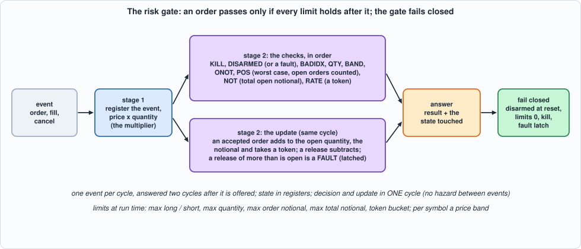
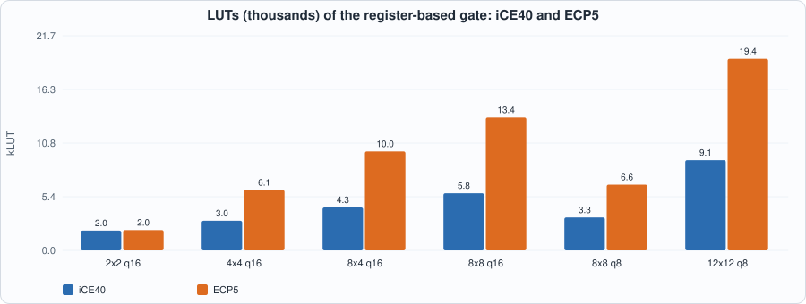
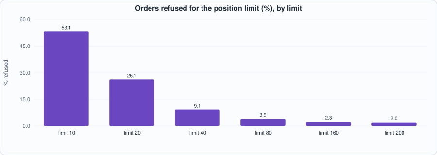
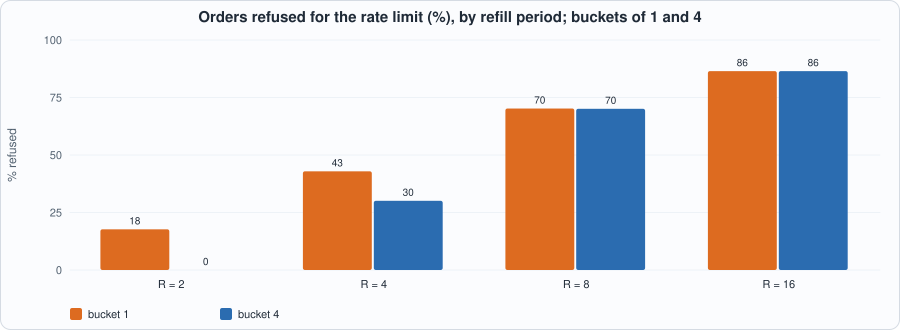

23. Pre-Trade Risk: Position, Notional and Rate Limits, a Price Band, a Kill Switch, a Gate That Fails Closed, and a Bounded Proof That It Holds¶
About the kestrels in this picture
- American kestrel (Falco sparverius) is the smallest falcon in North America and is found from Alaska to South America. The sexes differ in plumage: males have blue-grey wings, females are barred rufous. It hunts insects and small vertebrates from perches and by hovering.
- Seychelles kestrel (Falco araeus) is found on the granitic islands of the Seychelles. It is a small kestrel that hunts lizards and insects in forest and around villages.
The scene is imaginary and the birds are stylised drawings.
What you will see: every order the system sends passes through one place that can say no. A risk gate keeps, for each account and symbol, what the account holds and what it has in flight, and refuses an order that would take it past a limit, counting the worst case in which everything still open is executed. It also refuses orders too large, too far from the market, too many in a short time, or sent while a kill switch is on, and it fails closed: after a reset, after a malformed report from the order manager, and whenever it is not sure, it says no. The chapter writes the specification first, builds a gate that decides and updates its state in one cycle, tests it cycle for cycle against the specification and, because this is the one place where a bug costs money and the test of "it passed 10,000 random orders" is not enough, proves in the SAT engine that, for every possible sequence of up to 6 cycles from reset, an order the gate approves leaves every limit intact.
What you need to know first: Chapter 5 (the DSP multiplier), Chapter 6 (a verification harness and Yosys's SAT engine), Chapter 20 (a state machine tested against a model in which time is part of the specification) and Chapter 22 (fixed-point arithmetic and its widths).
What this chapter builds: rtl/risk.sv (risk and the pin wrapper risk_syn), model/risk_gold.py (the specification, the closed loop and the stimulus), tb/risk_tb.sv, formal/risk_props.sv (the properties), tools/ch23_run.py, tools/ch23_formal.py, tools/ch23_example_a.py, tools/ch23_example_b.py, tools/mut_ch23.py, tools/make_figs_ch23.py.
Scope: what this chapter leaves out, on purpose
The gate protects against what is known to it: the orders it approved and the releases the order manager reports. It does not see the exchange; an order already sent is not recalled by the kill switch (the kill acts on the next order). A release names the order's side, price and the quantity released; a release that does not match what is open is a fault, and the gate latches it (a real order manager keeps a table of live orders; here the gate checks the totals). State is in registers (a few accounts and symbols: NA, NS <= 15); a RAM-based gate, which has a read-modify-write hazard between consecutive events on the same account, is an exercise. The proof is bounded: for every input sequence of up to 6 cycles from reset, not for all time (see "The proof"). Contract: the limits max_long and max_short are below 2^(QW-1) and max_not below 2^(PW+QW+1) (so that no register overflows), in_valid is 0 while the reset is applied, and the event type is 0 to 2. No design here comes near 125 MHz (Example A). This is a model of a design, not a product.
What the gate promises¶
model/risk_gold.py states it in plain Python. Per account a and symbol s the gate keeps pos (net shares filled), ob and os (shares open: accepted, not yet filled or cancelled, on the buy and sell side); per account the notional (the sum of price x quantity of the open orders) and a token bucket. An ORDER is checked in a fixed order and the first failure is the answer:
| code | result | refused because |
|---|---|---|
| 1 | KILL | the kill input was high in the cycle the order was offered |
| 2 | DISARMED | the gate is not armed, or a fault has happened |
| 3 | BADIDX | the account or the symbol does not exist |
| 4 | QTY | the quantity is 0 or above max_qty |
| 5 | BAND | the price is outside the symbol's band lo..hi (inclusive) |
| 6 | ONOT | price x quantity is above max_onot |
| 7 | POS | a buy: pos + ob + qty > max_long; a sell: pos - os - qty < -max_short |
| 8 | NOT | the open notional plus this order's is above max_not |
| 9 | RATE | the account's bucket has no token |
| 0 | OK | none of the above: the order is added to ob or os and to the notional and takes a token |
The worst case is the point of POS and NOT. pos + ob is the largest long position the account can reach if every open buy is filled and nothing else happens; a limit on pos alone would let an account that has 100 shares of buys open in the market buy 100 more. A fill moves pos and releases ob or os (so pos + ob is unchanged by a fill); a cancel releases without moving pos; both release the notional of the part released. They are applied even when the gate is disarmed or killed: a cancel must always get through. A release of more than is open, or for an account or symbol that does not exist, changes nothing, answers FAULT and latches the fault: from then on every order is refused until reset (the books of the gate and of the order manager no longer agree, and the gate cannot tell which is right).
Fails closed. After reset the gate is disarmed, the fault latch is clear, every limit register that matters is 0 (max_qty = 0 refuses every order even if somebody arms the gate before configuring it) and every band is empty. arm (a pulse) is refused while kill is high; disarm wins over arm; kill is a level, sampled in the cycle the order is offered. Tokens come back one per R cycles up to the bucket's size; writing an account's configuration refills its bucket.
Time. One event per cycle, answered two cycles after it is offered, with no stall. A write (a configuration, a band, arm, disarm) in cycle c is seen by the orders offered from cycle c on (they are checked in cycle a + 1 > c).
#!/usr/bin/env python3
"""Chapter 23: the specification of the pre-trade risk gate. An ORDER may leave the building only if every limit holds AFTER it, counting the worst case in which everything still open is executed. FILLS and CANCELS release what an order took. The gate fails CLOSED.
STATE. Per account a and symbol s: pos (signed net shares filled), ob and os (open buy and sell shares: accepted, not yet filled or cancelled). Per account: notional (the sum of price x quantity of the open orders) and tokens (the rate bucket). Global: armed, fault.
CONFIGURATION (written at run time, reset to values that reject everything). Per account: max_long, max_short, max_qty, max_onot (the largest notional of one order), max_not (the largest total open notional), cap (the bucket size). Per symbol: a price band lo..hi (reset: lo > hi, empty). Every R cycles each account earns one token (up to cap); writing an account's configuration refills its bucket to cap.
EVENTS (offered in cycle a, answered in cycle a + 2, one per cycle, never stalled). ORDER(acct, sym, side, px, qty) is checked in this order, the first failure is the answer: 1 KILL (the kill input was high in cycle a), 2 DISARMED (not armed, or a fault has happened), 3 BADIDX (account or symbol out of range), 4 QTY (qty = 0 or above max_qty), 5 BAND (price outside lo..hi), 6 ONOT (px x qty above max_onot), 7 POS (buy: pos + ob + qty above max_long; sell: pos - os - qty below -max_short), 8 NOT (notional + px x qty above max_not), 9 RATE (no token), else 0 OK. An accepted order adds qty to ob (buy) or os (sell), px x qty to the notional and takes a token. A rejected order changes nothing.
FILL(acct, sym, side, px, qty) and CANCEL(...) name an accepted order's side, price and the quantity released: qty from ob (buy) or os (sell), px x qty from the notional; a FILL also moves pos (+qty for a buy, -qty for a sell). They are applied whether or not the gate is armed or killed (a cancel must always get through). If they release more than is open (or name a bad account or symbol), nothing changes and the answer is 10 FAULT, and the FAULT latch is set: from then on every order is refused (2) until reset.
CONTROL. arm (a pulse) sets armed unless kill is high (a fault refuses every order whether or not the gate is armed); disarm clears it and wins over arm. kill is a LEVEL. Reset (in_valid must be 0 while it is applied): armed = 0, fault = 0, all state 0, max_qty and the bucket sizes 0 (max_qty 0 rejects every order even if somebody arms the gate, so the other limits need no reset), bands empty.
ANSWER: (kind, result, pos, ob, os, notional, tokens) of the touched (account, symbol) AFTER the update (zeros if the indexes are bad).
TIME: a write (configuration, band, arm, disarm) in cycle c is seen by the orders offered from cycle c on (they are checked in cycle a + 1 > c); the kill input is sampled in the cycle the order is offered. A token tick comes in the cycles with c mod R = R - 1, and is applied after the order of that cycle took its token."""
import random
ORDER, FILL, CANCEL = range(3)
KN = ["ORDER", "FILL", "CANCEL"]
OK, KILL, DISARMED, BADIDX, QTY, BAND, ONOT, POS, NOT, RATE, FAULT = range(11)
RN = ["OK", "KILL", "DISARMED", "BADIDX", "QTY", "BAND", "ONOT", "POS", "NOT", "RATE", "FAULT"]
BUY, SELL = 0, 1
def new_cfg(): return dict(maxlong=0, maxshort=0, maxqty=0, maxonot=0, maxnot=0, cap=0)
class Gate:
def __init__(self, na, ns, r):
self.na, self.ns, self.r = na, ns, r
self.pos = [[0] * ns for _ in range(na)]; self.ob = [[0] * ns for _ in range(na)]; self.os = [[0] * ns for _ in range(na)]
self.notional = [0] * na; self.tokens = [0] * na; self.cfg = [new_cfg() for _ in range(na)]; self.band = [(1, 0)] * ns
self.armed = 0; self.fault = 0
def touched(self, a, s):
if a >= self.na or s >= self.ns: return (0, 0, 0, 0, 0)
return (self.pos[a][s], self.ob[a][s], self.os[a][s], self.notional[a], self.tokens[a])
def event(self, e, kill):
"""-> (kind, result, state after, consumed a token?)"""
t, a, s, side, px, qty = e; bad = a >= self.na or s >= self.ns; prod = px * qty
if t == ORDER:
if kill: r = KILL
elif not self.armed or self.fault: r = DISARMED
elif bad: r = BADIDX
else:
c = self.cfg[a]; lo, hi = self.band[s]
if qty == 0 or qty > c["maxqty"]: r = QTY
elif not lo <= px <= hi: r = BAND
elif prod > c["maxonot"]: r = ONOT
elif (side == BUY and self.pos[a][s] + self.ob[a][s] + qty > c["maxlong"]) or (side == SELL and self.pos[a][s] - self.os[a][s] - qty < -c["maxshort"]): r = POS
elif self.notional[a] + prod > c["maxnot"]: r = NOT
elif self.tokens[a] == 0: r = RATE
else: r = OK
if r == OK:
if side == BUY: self.ob[a][s] += qty
else: self.os[a][s] += qty
self.notional[a] += prod; self.tokens[a] -= 1
return t, r, self.touched(a, s), r == OK
open_ = None if bad else (self.ob[a][s] if side == BUY else self.os[a][s])
if bad or qty > open_ or prod > self.notional[a]: self.fault = 1; return t, FAULT, self.touched(a, s), False
if side == BUY: self.ob[a][s] -= qty
else: self.os[a][s] -= qty
self.notional[a] -= prod
if t == FILL: self.pos[a][s] += qty if side == BUY else -qty
return t, OK, self.touched(a, s), False
def run(cycles, na=4, ns=4, r=4):
"""Closed loop. cycles[c] = dict(ev=(type, acct, sym, side, px, qty), cfg=(acct, dict), band=(sym, lo, hi), arm=1, disarm=1, kill=1), any subset; cycle 0 is the first cycle after reset. -> dict(rows, gate) with rows[c] = (valid, kind, result, pos, ob, os, notional, tokens) of the answer visible in cycle c."""
g = Gate(na, ns, r); n = len(cycles) + 3; rows = [(0,) * 8] * n; pend = None
for c in range(n):
cy = cycles[c] if c < len(cycles) else {}
if pend is not None: # stage C: the event offered in cycle c - 1, with the state as of the start of cycle c
e, k = pend; kind, res, st, _ = g.event(e, k); rows[c + 1 if c + 1 < n else c] = (1, kind, res) + st
pend = (cy["ev"], cy.get("kill", 0)) if "ev" in cy else None
for a in range(na): # the token tick, after the order of this cycle took its token
if c % r == r - 1 and g.tokens[a] < g.cfg[a]["cap"]: g.tokens[a] += 1
if "cfg" in cy: # a configuration write refills the bucket (and wins over the tick)
a, u = cy["cfg"]
if a < na: g.cfg[a] = dict(u); g.tokens[a] = u["cap"]
if "band" in cy:
s, lo, hi = cy["band"]
if s < ns: g.band[s] = (lo, hi)
if cy.get("disarm"): g.armed = 0
elif cy.get("arm") and not cy.get("kill", 0): g.armed = 1
return dict(rows=rows[:len(cycles) + 3], gate=g)
def expected_rows(res): return [(c,) + tuple(r) for c, r in enumerate(res["rows"])]
def write_stim(path, cycles, seed=1):
"""One line per cycle, the layout of tb/risk_tb.sv (bit offsets: event 0..43, account configuration 44..176, band 177..213, control 214..216); fields not offered are junk."""
rng = random.Random(seed)
with open(path, "w") as f:
for cy in cycles:
v = 0; e = cy.get("ev"); u = cy.get("cfg"); b = cy.get("band")
t, a, s, side, px, qty = e if e else (rng.randrange(3), rng.randrange(16), rng.randrange(16), rng.randrange(2), rng.getrandbits(16), rng.getrandbits(16))
v |= (1 if e else 0) | (t << 1) | (a << 3) | (s << 7) | (side << 11) | (px << 12) | (qty << 28)
ca, w = u if u else (rng.randrange(16), dict(maxlong=rng.getrandbits(16), maxshort=rng.getrandbits(16), maxqty=rng.getrandbits(16), maxonot=rng.getrandbits(32), maxnot=rng.getrandbits(40), cap=rng.getrandbits(8)))
v |= ((1 if u else 0) << 44) | (ca << 45) | (w["maxlong"] << 49) | (w["maxshort"] << 65) | (w["maxqty"] << 81) | (w["maxonot"] << 97) | (w["maxnot"] << 129) | (w["cap"] << 169)
bs, lo, hi = b if b else (rng.randrange(16), rng.getrandbits(16), rng.getrandbits(16))
v |= ((1 if b else 0) << 177) | (bs << 178) | (lo << 182) | (hi << 198)
v |= (cy.get("arm", 0) << 214) | (cy.get("disarm", 0) << 215) | (cy.get("kill", 0) << 216)
f.write("%056x\n" % v)
return len(cycles)
def gen_cycles(rng, n, na=4, ns=4, r=4, qmax=60, pmax=100, density=0.7, bad=0.03, malformed=0.0, kill_rate=0.01):
"""Traffic: the control plane configures every account and symbol and arms the gate in the first cycles (but writes again at random later, with arm / disarm / kill pulses), then orders, fills and cancels mostly on accepted orders (an oracle gate runs alongside, so that fills and cancels mostly release what is open), some at limits, some bad indexes, some malformed releases (more than is open)."""
def rcfg(): return dict(maxlong=rng.randint(0, qmax * 2), maxshort=rng.randint(0, qmax * 2), maxqty=rng.randint(0, qmax), maxonot=rng.randint(0, pmax * qmax), maxnot=rng.randint(0, pmax * qmax * 3), cap=rng.randint(0, 6))
cyc = []; setup = [dict(cfg=(a, rcfg())) for a in range(na)] + [dict(band=(s, rng.randint(0, pmax // 2), rng.randint(pmax // 2, pmax))) for s in range(ns)]
for u in setup: cyc.append(u)
cyc.append(dict(arm=1)); og = Gate(na, ns, r); open_orders = []
def oracle(cy, c): # the generator's own copy of the gate, to know which orders were accepted (the same writes are seen by the event of their cycle)
if "cfg" in cy:
a, u = cy["cfg"]
if a < na: og.cfg[a] = dict(u); og.tokens[a] = u["cap"]
if "band" in cy:
s_, lo, hi = cy["band"]
if s_ < ns: og.band[s_] = (lo, hi)
if cy.get("disarm"): og.armed = 0
elif cy.get("arm") and not cy.get("kill", 0): og.armed = 1
took = None
if "ev" in cy: took = og.event(cy["ev"], cy.get("kill", 0))
for a in range(na):
if c % r == r - 1 and og.tokens[a] < og.cfg[a]["cap"]: og.tokens[a] += 1
return took
for c, u in enumerate(cyc): oracle(u, c)
for n_ in range(n):
cy = {}; c = len(cyc)
if rng.random() < density:
x = rng.random()
if x < 0.45 or not open_orders:
a = rng.randrange(na + (1 if rng.random() < bad else 0)); s = rng.randrange(ns + (1 if rng.random() < bad else 0)); cy["ev"] = (ORDER, a, s, rng.randrange(2), rng.randint(0, pmax + 5), rng.randint(0, qmax + 3))
else:
k = rng.randrange(len(open_orders)); o = open_orders[k]; q = rng.randint(1, max(1, o[5])) if rng.random() > malformed else o[5] + rng.randint(1, 3)
cy["ev"] = (rng.choice([FILL, CANCEL]), o[1], o[2], o[3], o[4] if rng.random() > malformed / 2 else o[4] + 1, q)
if rng.random() < 0.02: cy["cfg"] = (rng.randrange(na), rcfg())
if rng.random() < 0.02: cy["band"] = (rng.randrange(ns), rng.randint(0, pmax // 2), rng.randint(pmax // 2, pmax))
if rng.random() < 0.02: cy["arm"] = 1
if rng.random() < 0.004: cy["disarm"] = 1
if rng.random() < kill_rate: cy["kill"] = 1
took = oracle(cy, c); cyc.append(cy)
if took is not None and took[0] == ORDER and took[1] == OK: open_orders.append(cy["ev"])
elif took is not None and took[0] != ORDER and took[1] == OK: # forget the released part
e = cy["ev"]
for k, x in enumerate(open_orders):
if x[1:5] == e[1:5]:
if x[5] <= e[5]: open_orders.pop(k)
else: open_orders[k] = x[:5] + (x[5] - e[5],)
break
for cy in cyc: cy.pop("_order", None)
return cyc
def fault_cycles(variant, na=4, ns=4):
"""Directed, one release that is not allowed, each from reset (the latch holds until reset, so one fault per run): 0 a sell release of one more than is open; 1 the exact open quantity (applied), then one more; 2 a quantity that is open but at a price whose notional is exactly one more than is open (21 against 20); 3 a bad account; 4 a bad symbol. After it: an order (refused: DISARMED) and a release that is allowed (applied)."""
big = dict(maxlong=100, maxshort=100, maxqty=50, maxonot=5000, maxnot=20000, cap=9); O = lambda side, px, q: dict(ev=(ORDER, 0, 0, side, px, q))
out = [dict(cfg=(0, big)), dict(band=(0, 1, 50)), dict(arm=1), dict()]
if variant == 0: out += [O(SELL, 20, 5), O(BUY, 20, 5), dict(ev=(CANCEL, 0, 0, SELL, 20, 6))]
elif variant == 1: out += [O(SELL, 20, 5), O(BUY, 20, 5), dict(ev=(CANCEL, 0, 0, SELL, 20, 5)), dict(ev=(CANCEL, 0, 0, SELL, 20, 1))]
elif variant == 2: out += [O(BUY, 20, 1), dict(ev=(CANCEL, 0, 0, BUY, 21, 1))]
elif variant == 3: out += [O(BUY, 20, 5), dict(ev=(FILL, na, 0, BUY, 20, 5))]
else: out += [O(BUY, 20, 5), dict(ev=(CANCEL, 0, ns, BUY, 20, 5))]
out += [O(BUY, 20, 1), dict(ev=(FILL, 0, 0, BUY, 20, 1)), dict(), dict(), dict()]
return out
def reset_cycles(na=4, ns=4, r=5):
"""Directed, the first cycles after reset: an order to an account nobody configured, ten cycles after reset (its answer shows the account's tokens: 0, since the bucket size resets to 0), then an account with a bucket of 4 and a stream of accepted orders, one per cycle, whose answers show the bucket emptying and the ticks refilling it (the phase of the tick counter after reset)."""
big = dict(maxlong=100, maxshort=100, maxqty=50, maxonot=5000, maxnot=20000, cap=4)
out = [dict() for _ in range(10)] + [dict(arm=1), dict(), dict(ev=(ORDER, 0, 0, BUY, 5, 1)), dict(cfg=(0, big)), dict(band=(0, 1, 50))]
out += [dict(ev=(ORDER, 0, 0, BUY if k % 3 else SELL, 5, 1)) for k in range(24)] + [dict()] * 4
return out
def edge_cycles(na=4, ns=4, r=1000):
"""Directed: every result of an order once and each limit at its boundary (the sequence of the hand-checked scenarios, one event per cycle), with a second account whose bucket holds one token, a fault, and fills after it. R must be large (no token ticks): the bucket sizes are the counts."""
c0 = dict(maxlong=10, maxshort=8, maxqty=6, maxonot=300, maxnot=500, cap=5); c1 = dict(c0, cap=1)
O = lambda a, s, side, px, q, **kw: dict(ev=(ORDER, a, s, side, px, q), **kw)
out = [O(0, 0, BUY, 50, 1), dict(arm=1), O(0, 0, BUY, 50, 1), dict(cfg=(0, c0)), O(0, 0, BUY, 50, 1), dict(cfg=(1, c1)), dict(band=(0, 10, 100)), dict(band=(1, 10, 100)), dict(), dict(disarm=1)] # armed with nothing configured: QTY (max_qty resets to 0); configured account, no band: BAND (the band resets empty)
out += [O(0, 0, BUY, 50, 1), dict(arm=1), dict(), O(0, 0, BUY, 50, 1, kill=1), O(na, 0, BUY, 50, 1), O(0, ns, BUY, 50, 1), O(0, 0, BUY, 50, 0), O(0, 0, BUY, 50, 7), O(0, 0, BUY, 9, 1), O(0, 0, BUY, 101, 1), O(0, 0, SELL, 100, 4)]
out += [O(0, 0, SELL, 10, 1), O(0, 0, SELL, 75, 4), O(0, 0, SELL, 20, 4), O(0, 0, SELL, 20, 3), O(0, 0, BUY, 20, 6), O(0, 0, BUY, 20, 5), O(0, 0, BUY, 20, 4), O(0, 0, BUY, 10, 1)]
out += [dict(ev=(FILL, 0, 0, BUY, 20, 6)), O(0, 0, BUY, 10, 4), dict(ev=(FILL, 0, 0, SELL, 20, 3)), dict(ev=(CANCEL, 0, 0, BUY, 10, 1)), O(1, 1, BUY, 50, 1), O(1, 1, BUY, 50, 1), O(1, 0, SELL, 20, 1)]
out += [dict(disarm=1), dict(ev=(CANCEL, 1, 1, BUY, 50, 1), kill=1), dict(arm=1, kill=1), O(0, 0, BUY, 20, 1), dict(arm=1, disarm=1), O(0, 0, BUY, 20, 1), dict(arm=1), O(0, 0, BUY, 20, 1)] # releases apply while disarmed and killed; arm is refused while kill is high; disarm wins over arm; the gate is armed again
out += [dict(ev=(CANCEL, 0, 0, BUY, 10, 1)), O(0, 0, BUY, 20, 1), dict(disarm=1), dict(arm=1), O(0, 0, BUY, 20, 1), dict(ev=(FILL, 0, 0, SELL, 75, 4)), dict(ev=(FILL, na, 0, BUY, 1, 1)), dict(), dict(), dict()]
return out
if __name__ == "__main__":
g = Gate(2, 2, 4); g.cfg[0] = dict(maxlong=10, maxshort=8, maxqty=6, maxonot=300, maxnot=500, cap=2); g.tokens[0] = 2; g.band[0] = (10, 100); g.band[1] = (10, 100)
ev = lambda *a, k=0: g.event(a, k)
assert ev(ORDER, 0, 0, BUY, 50, 1)[:2] == (ORDER, DISARMED) # not armed: nothing passes
g.armed = 1
assert ev(ORDER, 0, 0, BUY, 50, 1, k=1)[1] == KILL and ev(ORDER, 5, 0, BUY, 50, 1, k=1)[1] == KILL # kill is checked first, even before the index
assert ev(ORDER, 5, 0, BUY, 50, 1)[1] == BADIDX and ev(ORDER, 0, 2, BUY, 50, 1)[1] == BADIDX # account and symbol out of range
assert ev(ORDER, 0, 0, BUY, 50, 0)[1] == QTY and ev(ORDER, 0, 0, BUY, 50, 7)[1] == QTY and ev(ORDER, 0, 0, BUY, 50, 6)[1] == OK # zero, above max_qty 6, and exactly 6 passes
assert g.touched(0, 0) == (0, 6, 0, 300, 1)
g = Gate(2, 2, 4); g.cfg[0] = dict(maxlong=10, maxshort=8, maxqty=6, maxonot=300, maxnot=500, cap=2); g.tokens[0] = 2; g.band[0] = (10, 100); g.band[1] = (10, 100); g.armed = 1
assert ev(ORDER, 0, 0, BUY, 9, 1)[1] == BAND and ev(ORDER, 0, 0, BUY, 101, 1)[1] == BAND and ev(ORDER, 0, 0, SELL, 10, 1)[:3] == (ORDER, OK, g.touched(0, 0)) and g.touched(0, 0) == (0, 0, 1, 10, 1) # the band is inclusive
assert ev(ORDER, 0, 0, SELL, 100, 4)[1] == ONOT and ev(ORDER, 0, 0, SELL, 75, 4)[1] == OK and g.touched(0, 0) == (0, 0, 5, 310, 0) # 100 x 4 = 400 > 300; 75 x 4 = 300 is allowed: os 1 + 4 = 5, notional 10 + 300, last token
assert ev(ORDER, 0, 0, BUY, 50, 1)[1] == RATE and g.touched(0, 0) == (0, 0, 5, 310, 0) # no token: refused, nothing changed
g.tokens[0] = 5
assert ev(ORDER, 0, 0, SELL, 20, 4)[1] == POS and ev(ORDER, 0, 0, SELL, 20, 3)[1] == OK and g.touched(0, 0) == (0, 0, 8, 370, 4) # short: 0 - 5 - 4 = -9 < -8; 0 - 5 - 3 = -8 allowed
assert ev(ORDER, 0, 0, BUY, 20, 6)[1] == OK and g.touched(0, 0) == (0, 6, 8, 490, 3) # long: 0 + 0 + 6 = 6
assert ev(ORDER, 0, 0, BUY, 20, 5)[1] == POS and ev(ORDER, 0, 0, BUY, 20, 4)[1] == NOT and g.touched(0, 0) == (0, 6, 8, 490, 3) # 6 + 5 = 11 > 10; 6 + 4 = 10 passes POS but 490 + 80 = 570 > 500
assert ev(ORDER, 0, 0, BUY, 10, 1)[1] == OK and g.touched(0, 0) == (0, 7, 8, 500, 2) # 500 = max_not exactly
assert ev(FILL, 0, 0, BUY, 20, 6)[1:] == (OK, (6, 1, 8, 380, 2), False) and ev(FILL, 0, 0, SELL, 20, 3)[1:] == (OK, (3, 1, 5, 320, 2), False) # a fill releases open quantity and notional and moves the position
assert ev(CANCEL, 0, 0, BUY, 10, 1)[1:] == (OK, (3, 0, 5, 310, 2), False) # a cancel releases but does not move the position
assert ev(CANCEL, 0, 0, BUY, 10, 1)[1:] == (FAULT, (3, 0, 5, 310, 2), False) and g.fault == 1 # more than is open: FAULT, nothing changes, the latch is set
assert ev(ORDER, 0, 0, BUY, 20, 1)[1] == DISARMED # armed, but after a fault every order is refused
assert ev(FILL, 0, 0, SELL, 75, 4)[1:] == (OK, (-1, 0, 1, 10, 2), False) # fills still apply after a fault (and while killed or disarmed)
h = Gate(1, 1, 4); h.cfg[0] = dict(maxlong=10, maxshort=10, maxqty=5, maxonot=100, maxnot=100, cap=3); h.tokens[0] = 3; h.band[0] = (1, 100); h.armed = 1
assert h.event((ORDER, 0, 0, BUY, 10, 2), 0)[1] == OK and h.event((CANCEL, 0, 0, BUY, 11, 2), 0)[1] == FAULT and h.touched(0, 0) == (0, 2, 0, 20, 2) # releasing 11 x 2 = 22 from a notional of 20
assert h.event((FILL, 5, 0, BUY, 1, 1), 0)[1] == FAULT # a fill for an account that does not exist
# timing, hand-simulated: R = 2 (a token tick in the odd cycles), cap 2; a write in cycle c is seen by the orders offered from cycle c on
B = dict(maxlong=10, maxshort=10, maxqty=5, maxonot=1000, maxnot=1000, cap=2); o = (ORDER, 0, 0, BUY, 10, 1)
t = run([dict(cfg=(0, B)), dict(band=(0, 1, 100), ev=o), dict(arm=1, ev=o), dict(ev=o), dict(ev=o), dict(ev=o), dict(ev=o), dict(ev=o), dict(), dict()], 1, 1, 2)["rows"]
assert t[3] == (1, ORDER, DISARMED, 0, 0, 0, 0, 2) and t[4] == (1, ORDER, OK, 0, 1, 0, 10, 1) # offered in cycle 1 (checked in 2, before the arm of cycle 2 lands): refused; offered in cycle 2 together with the arm: accepted, tokens 2 -> 1 (the tick of cycle 3 refills the bucket after the answer is formed)
assert t[5] == (1, ORDER, OK, 0, 2, 0, 20, 1) and t[6] == (1, ORDER, OK, 0, 3, 0, 30, 0) and t[7] == (1, ORDER, OK, 0, 4, 0, 40, 0) # checked in 4 (tokens 2 -> 1, no tick), in 5 (1 -> 0, the tick of 5 gives 1 back), in 6 (1 -> 0)
assert t[8] == (1, ORDER, RATE, 0, 4, 0, 40, 0) and t[9] == (1, ORDER, OK, 0, 5, 0, 50, 0) # checked in 7: no token, refused (the tick of cycle 7 comes after it); checked in 8: the token from that tick
u = run([dict(cfg=(0, B)), dict(band=(0, 1, 100)), dict(arm=1, kill=1), dict(ev=o), dict(ev=o, kill=1), dict(arm=1), dict(ev=o), dict(), dict()], 1, 1, 100)["rows"]
assert u[5] == (1, ORDER, DISARMED, 0, 0, 0, 0, 2) and u[6] == (1, ORDER, KILL, 0, 0, 0, 0, 2) and u[8] == (1, ORDER, OK, 0, 1, 0, 10, 1) # the arm of cycle 2 was refused (kill was high), so the order of cycle 3 is DISARMED; kill sampled in cycle 4 refuses that order; the arm of cycle 5 lands, the order of cycle 6 passes
f = run([dict(cfg=(0, B)), dict(band=(0, 1, 100)), dict(arm=1), dict(ev=(CANCEL, 0, 0, BUY, 10, 1)), dict(ev=o), dict(), dict()], 1, 1, 100)
assert f["rows"][5][:3] == (1, CANCEL, FAULT) and f["rows"][6][:3] == (1, ORDER, DISARMED) and f["gate"].fault == 1 and f["gate"].armed == 1 # a release with nothing open: FAULT, and the next order is refused although the gate is armed
d = run([dict(cfg=(0, B)), dict(band=(0, 1, 100)), dict(arm=1, disarm=1), dict(ev=o), dict(), dict()], 1, 1, 100)
assert d["rows"][5][2] == DISARMED and d["gate"].armed == 0 # disarm wins over arm in the same cycle
print("risk_gold hand-checked scenarios passed")
The hand-checked scenarios are worked out on paper: every result at the exact boundary of its limit (a quantity of exactly max_qty, a price on each end of the band, a notional of exactly max_onot and max_not, a short position of exactly -max_short), the order of the checks, a release that is a fault and the refusal after it, and the cycle-level timing of a write against an order, of arm against kill and of the token tick (an answer shows the tokens before the tick of its own cycle).
The hardware¶

Figure 23.1: the risk gate.- Stage 1 registers the event, samples the kill input with it, and forms
price x quantity(a 16 x 16-bit multiplication: a DSP block where there is one). - Stage 2 checks and updates in the same cycle: it reads the touched account and symbol from the register arrays, applies the checks in the order of the table, and writes back the new open quantity, notional, position and tokens. One event completes per cycle, so a second event on the same account sees the state the first one left: there is no hazard to forward. The price is the clock (Example A).
- The token bucket takes a token in the same cycle as the order and refills on a global tick; the same register update does both (
min(cap, tokens - taken + tick)), and a configuration write wins. - What resets:
armed,fault, the tick counter,max_qty, the bucket sizes, the tokens, positions, open quantities and notionals, and the bands (empty). The other limits are not reset: withmax_qty = 0no order gets past the quantity check, so they cannot matter (the mutation run found that resetting them was code that could not matter). - The answer is the result and the state of the touched account and symbol after the update (zeros for a bad index): the testbench checks the state, not only the verdict.
// Chapter 23: the pre-trade risk gate. An order passes only if every limit holds after it, counting everything still open as if it were executed; fills and cancels release what an order took; the gate fails closed (disarmed after reset, limits that reject everything after reset, a fault latch, a kill input). One event per cycle, answered two cycles after it is offered: stage 1 registers the event and forms price x quantity (the multiplication), stage 2 checks and updates the state in one cycle, so there is no hazard between events. The specification is in model/risk_gold.py.
module risk #(parameter int NA = 4, parameter int NS = 4, parameter int QW = 16, parameter int PW = 16, parameter int R = 4, parameter int TW = 8) (
input logic clk, input logic rst,
input logic ev_valid, input logic [1:0] ev_type, input logic [3:0] ev_acct, input logic [3:0] ev_sym, input logic ev_side, input logic [PW-1:0] ev_px, input logic [QW-1:0] ev_qty,
input logic cfg_a_valid, input logic [3:0] cfg_a_idx, input logic [QW-1:0] cfg_maxlong, input logic [QW-1:0] cfg_maxshort, input logic [QW-1:0] cfg_maxqty, input logic [PW+QW-1:0] cfg_maxonot, input logic [PW+QW+1:0] cfg_maxnot, input logic [TW-1:0] cfg_cap,
input logic cfg_b_valid, input logic [3:0] cfg_b_idx, input logic [PW-1:0] cfg_lo, input logic [PW-1:0] cfg_hi,
input logic ctl_arm, input logic ctl_disarm, input logic kill,
output logic o_valid, output logic [1:0] o_kind, output logic [3:0] o_res, output logic signed [QW+1:0] o_pos, output logic [QW-1:0] o_ob, output logic [QW-1:0] o_os, output logic [PW+QW+1:0] o_not, output logic [TW-1:0] o_tok);
localparam int AW = (NA > 1) ? $clog2(NA) : 1, SW = (NS > 1) ? $clog2(NS) : 1, NW = PW + QW + 2, PB = QW + 2, PHW = (R > 1) ? $clog2(R) : 1;
localparam logic [3:0] OK = 4'd0, KILL = 4'd1, DISARMED = 4'd2, BADIDX = 4'd3, QTY = 4'd4, BAND = 4'd5, ONOT = 4'd6, POS = 4'd7, NOT = 4'd8, RATE = 4'd9, FAULT = 4'd10;
// ---- configuration and state
logic [QW-1:0] c_long [0:NA-1]; logic [QW-1:0] c_short [0:NA-1]; logic [QW-1:0] c_qty [0:NA-1]; logic [PW+QW-1:0] c_onot [0:NA-1]; logic [NW-1:0] c_not [0:NA-1]; logic [TW-1:0] c_cap [0:NA-1];
logic [PW-1:0] b_lo [0:NS-1]; logic [PW-1:0] b_hi [0:NS-1];
logic signed [PB-1:0] pos [0:NA-1][0:NS-1]; logic [QW-1:0] ob [0:NA-1][0:NS-1]; logic [QW-1:0] os [0:NA-1][0:NS-1]; logic [NW-1:0] notl [0:NA-1]; logic [TW-1:0] tok [0:NA-1];
logic armed, fault; logic [PHW-1:0] phase;
// ---- stage 1: the event and its notional
logic s1_v, s1_side, s1_kill; logic [1:0] s1_t; logic [3:0] s1_a, s1_s; logic [PW-1:0] s1_px; logic [QW-1:0] s1_qty; logic [PW+QW-1:0] s1_prod;
always_ff @(posedge clk) begin
s1_v <= ev_valid; s1_t <= ev_type; s1_a <= ev_acct; s1_s <= ev_sym; s1_side <= ev_side; s1_px <= ev_px; s1_qty <= ev_qty; s1_kill <= kill; s1_prod <= ev_px * ev_qty;
end
// ---- stage 2: the checks, in the order of the specification, and the update
wire bad = (s1_a >= 4'(NA)) || (s1_s >= 4'(NS));
wire [AW-1:0] a = s1_a[AW-1:0]; wire [SW-1:0] s = s1_s[SW-1:0];
wire buy = !s1_side; wire isord = (s1_t == 2'd0), isfill = (s1_t == 2'd1);
wire signed [PB+1:0] pl = $signed({{2{pos[a][s][PB-1]}}, pos[a][s]}) + $signed({{(PB+2-QW){1'b0}}, ob[a][s]}) + $signed({{(PB+2-QW){1'b0}}, s1_qty}); // pos + ob + qty (a buy)
wire signed [PB+1:0] ps = $signed({{2{pos[a][s][PB-1]}}, pos[a][s]}) - $signed({{(PB+2-QW){1'b0}}, os[a][s]}) - $signed({{(PB+2-QW){1'b0}}, s1_qty}); // pos - os - qty (a sell)
wire signed [PB+1:0] mlong = $signed({{(PB+2-QW){1'b0}}, c_long[a]}), mshort = -$signed({{(PB+2-QW){1'b0}}, c_short[a]});
wire [NW-1:0] prod = {{2{1'b0}}, s1_prod};
logic [3:0] res; logic took; logic fault_set;
always_comb begin
res = OK; took = 1'b0; fault_set = 1'b0;
if (isord) begin
if (s1_kill) res = KILL;
else if (!armed || fault) res = DISARMED;
else if (bad) res = BADIDX;
else if (s1_qty == '0 || s1_qty > c_qty[a]) res = QTY;
else if (s1_px < b_lo[s] || s1_px > b_hi[s]) res = BAND;
else if (s1_prod > c_onot[a]) res = ONOT;
else if (buy ? (pl > mlong) : (ps < mshort)) res = POS;
else if (notl[a] + prod > c_not[a]) res = NOT;
else if (tok[a] == '0) res = RATE;
else begin res = OK; took = 1'b1; end
end else begin
if (bad || (buy ? (s1_qty > ob[a][s]) : (s1_qty > os[a][s])) || prod > notl[a]) begin res = FAULT; fault_set = 1'b1; end
end
end
wire apply = s1_v && !isord && !fault_set; // a valid release
wire [TW-1:0] tok_after [0:NA-1];
for (genvar g = 0; g < NA; g++) begin : tk
assign tok_after[g] = (s1_v && isord && took && a == AW'(g) && !bad) ? tok[g] - 1'b1 : tok[g];
end
wire tick = (phase == PHW'(R - 1));
always_ff @(posedge clk) begin
if (rst) begin
armed <= 1'b0; fault <= 1'b0; phase <= '0;
for (int i = 0; i < NA; i++) begin c_qty[i] <= '0; c_cap[i] <= '0; // max_qty 0 refuses every order, so the other limits need no reset; the bucket size does (the tokens tick up to it)
notl[i] <= '0; tok[i] <= '0; for (int j = 0; j < NS; j++) begin pos[i][j] <= '0; ob[i][j] <= '0; os[i][j] <= '0; end end
for (int j = 0; j < NS; j++) begin b_lo[j] <= '1; b_hi[j] <= '0; end
end else begin
phase <= tick ? '0 : phase + 1'b1;
// the order or the release of stage 2
if (s1_v && isord && took) begin
if (buy) ob[a][s] <= ob[a][s] + s1_qty; else os[a][s] <= os[a][s] + s1_qty;
notl[a] <= notl[a] + prod;
end
if (apply) begin
if (buy) ob[a][s] <= ob[a][s] - s1_qty; else os[a][s] <= os[a][s] - s1_qty;
notl[a] <= notl[a] - prod;
if (isfill) pos[a][s] <= buy ? pos[a][s] + $signed({{2{1'b0}}, s1_qty}) : pos[a][s] - $signed({{2{1'b0}}, s1_qty});
end
if (s1_v && fault_set) fault <= 1'b1;
// tokens: take, then tick (up to the cap); a configuration write refills
for (int i = 0; i < NA; i++) tok[i] <= (tick && tok_after[i] < c_cap[i]) ? tok_after[i] + 1'b1 : tok_after[i];
if (cfg_a_valid && cfg_a_idx < 4'(NA)) for (int i = 0; i < NA; i++) if (cfg_a_idx == 4'(i)) begin
c_long[i] <= cfg_maxlong; c_short[i] <= cfg_maxshort; c_qty[i] <= cfg_maxqty; c_onot[i] <= cfg_maxonot; c_not[i] <= cfg_maxnot; c_cap[i] <= cfg_cap; tok[i] <= cfg_cap;
end
if (cfg_b_valid && cfg_b_idx < 4'(NS)) for (int j = 0; j < NS; j++) if (cfg_b_idx == 4'(j)) begin b_lo[j] <= cfg_lo; b_hi[j] <= cfg_hi; end
if (ctl_disarm) armed <= 1'b0; else if (ctl_arm && !kill) armed <= 1'b1; // (a fault refuses every order whether or not the gate is armed)
end
end
// ---- the answer: the touched (account, symbol) after the update (before the token tick), zeros for a bad index
wire [QW-1:0] ob_n = (apply ? (buy ? ob[a][s] - s1_qty : ob[a][s]) : ((isord && took && buy) ? ob[a][s] + s1_qty : ob[a][s]));
wire [QW-1:0] os_n = (apply ? (!buy ? os[a][s] - s1_qty : os[a][s]) : ((isord && took && !buy) ? os[a][s] + s1_qty : os[a][s]));
wire signed [PB-1:0] pos_n = (apply && isfill) ? (buy ? pos[a][s] + $signed({{2{1'b0}}, s1_qty}) : pos[a][s] - $signed({{2{1'b0}}, s1_qty})) : pos[a][s];
wire [NW-1:0] not_n = apply ? notl[a] - prod : ((isord && took) ? notl[a] + prod : notl[a]);
always_ff @(posedge clk) begin
o_valid <= s1_v; o_kind <= s1_t; o_res <= res;
o_pos <= (bad) ? '0 : pos_n; o_ob <= bad ? '0 : ob_n; o_os <= bad ? '0 : os_n; o_not <= bad ? '0 : not_n; o_tok <= bad ? '0 : tok_after[a];
end
endmodule
// risk_syn: the same design behind a handful of pins, ONLY so that it fits a chip for the place-and-route runs: the inputs are shifted in serially, the outputs registered and folded into one 16-bit word.
module risk_syn #(parameter int NA = 4, parameter int NS = 4, parameter int QW = 16, parameter int PW = 16, parameter int R = 4, parameter int TW = 8) (input logic clk, input logic rst, input logic si, input logic sh, output logic [15:0] info);
logic [216:0] iv; logic ov_; logic [1:0] kind; logic [3:0] res; logic signed [QW+1:0] pos; logic [QW-1:0] ob, os; logic [PW+QW+1:0] nt; logic [TW-1:0] tk;
always_ff @(posedge clk) if (sh) iv <= {iv[215:0], si};
risk #(.NA(NA), .NS(NS), .QW(QW), .PW(PW), .R(R), .TW(TW)) u (.clk(clk), .rst(rst), .ev_valid(iv[0]), .ev_type(iv[2:1]), .ev_acct(iv[6:3]), .ev_sym(iv[10:7]), .ev_side(iv[11]), .ev_px(iv[12 +: PW]), .ev_qty(iv[28 +: QW]),
.cfg_a_valid(iv[44]), .cfg_a_idx(iv[48:45]), .cfg_maxlong(iv[49 +: QW]), .cfg_maxshort(iv[65 +: QW]), .cfg_maxqty(iv[81 +: QW]), .cfg_maxonot(iv[97 +: PW+QW]), .cfg_maxnot(iv[129 +: PW+QW+2]), .cfg_cap(iv[169 +: TW]),
.cfg_b_valid(iv[177]), .cfg_b_idx(iv[181:178]), .cfg_lo(iv[182 +: PW]), .cfg_hi(iv[198 +: PW]), .ctl_arm(iv[214]), .ctl_disarm(iv[215]), .kill(iv[216]),
.o_valid(ov_), .o_kind(kind), .o_res(res), .o_pos(pos), .o_ob(ob), .o_os(os), .o_not(nt), .o_tok(tk));
logic [15:0] x, r1; always_comb x = 16'(pos) ^ 16'(ob) ^ 16'(os) ^ 16'(nt) ^ 16'(nt >> 16) ^ {8'(tk), res, kind, ov_, 1'b0};
always_ff @(posedge clk) begin r1 <= x; info <= r1; end
endmodule
The tests¶
// Chapter 23 testbench for risk: line k of out/risk_stim.hex (56 hex digits) is everything offered in cycle k, cycle 0 being the first cycle after reset: event bits 0..43 (valid, type, account, symbol, side, price, quantity), account configuration 44..176 (valid, index, max long, max short, max quantity, max order notional, max notional, bucket size), symbol band 177..213 (valid, index, low, high), control 214..216 (arm, disarm, kill); fields not offered are junk. Before every clock edge it prints
// C <cycle> <o_valid> <kind> <result> <pos> <open buy> <open sell> <notional> <tokens> (zeros when o_valid = 0; pos signed)
`timescale 1ns/1ps
`ifndef NC
`define NC 1000
`endif
`ifndef NA
`define NA 4
`endif
`ifndef NS
`define NS 4
`endif
`ifndef QW
`define QW 16
`endif
`ifndef PW
`define PW 16
`endif
`ifndef R
`define R 4
`endif
module risk_tb;
localparam int NC = `NC, QW = `QW, PW = `PW, TW = 8;
logic clk = 0, rst = 1; logic [223:0] vec [0:NC-1]; int k, cyc = 0; logic run = 0;
logic ev_valid = 0, ev_side = 0, cfg_a_valid = 0, cfg_b_valid = 0, ctl_arm = 0, ctl_disarm = 0, kill = 0; logic [1:0] ev_type = '0; logic [3:0] ev_acct = '0, ev_sym = '0, cfg_a_idx = '0, cfg_b_idx = '0;
logic [PW-1:0] ev_px = '0, cfg_lo = '0, cfg_hi = '0; logic [QW-1:0] ev_qty = '0, cfg_maxlong = '0, cfg_maxshort = '0, cfg_maxqty = '0; logic [PW+QW-1:0] cfg_maxonot = '0; logic [PW+QW+1:0] cfg_maxnot = '0; logic [TW-1:0] cfg_cap = '0;
logic o_valid; logic [1:0] o_kind; logic [3:0] o_res; logic signed [QW+1:0] o_pos; logic [QW-1:0] o_ob, o_os; logic [PW+QW+1:0] o_not; logic [TW-1:0] o_tok;
risk #(.NA(`NA), .NS(`NS), .QW(QW), .PW(PW), .R(`R), .TW(TW)) dut (.clk(clk), .rst(rst), .ev_valid(ev_valid), .ev_type(ev_type), .ev_acct(ev_acct), .ev_sym(ev_sym), .ev_side(ev_side), .ev_px(ev_px), .ev_qty(ev_qty),
.cfg_a_valid(cfg_a_valid), .cfg_a_idx(cfg_a_idx), .cfg_maxlong(cfg_maxlong), .cfg_maxshort(cfg_maxshort), .cfg_maxqty(cfg_maxqty), .cfg_maxonot(cfg_maxonot), .cfg_maxnot(cfg_maxnot), .cfg_cap(cfg_cap),
.cfg_b_valid(cfg_b_valid), .cfg_b_idx(cfg_b_idx), .cfg_lo(cfg_lo), .cfg_hi(cfg_hi), .ctl_arm(ctl_arm), .ctl_disarm(ctl_disarm), .kill(kill),
.o_valid(o_valid), .o_kind(o_kind), .o_res(o_res), .o_pos(o_pos), .o_ob(o_ob), .o_os(o_os), .o_not(o_not), .o_tok(o_tok));
always #4 clk = ~clk;
`ifdef GARBAGE
initial begin // Icarus only: every register of the gate powers up with garbage, so that a reset that forgets one is seen
dut.armed = 1'b1; dut.fault = 1'b1; dut.phase = `R - 1;
for (int i = 0; i < `NA; i++) begin dut.c_long[i] = 7; dut.c_short[i] = 7; dut.c_qty[i] = 7; dut.c_onot[i] = 7; dut.c_not[i] = 7; dut.c_cap[i] = 3; dut.notl[i] = 5; dut.tok[i] = 3; for (int j = 0; j < `NS; j++) begin dut.pos[i][j] = 2; dut.ob[i][j] = 1; dut.os[i][j] = 1; end end
for (int j = 0; j < `NS; j++) begin dut.b_lo[j] = 0; dut.b_hi[j] = '1; end
end
`endif
longint pos_p;
always @(posedge clk) if (run) begin
pos_p = o_valid ? longint'(o_pos) : 0;
$display("C %0d %0d %0d %0d %0d %0d %0d %0d %0d", cyc, o_valid, o_valid ? o_kind : 2'd0, o_valid ? o_res : 4'd0, pos_p, o_valid ? o_ob : '0, o_valid ? o_os : '0, o_valid ? o_not : '0, o_valid ? o_tok : '0);
cyc++;
end
initial begin
$readmemh("out/risk_stim.hex", vec);
repeat (3) @(negedge clk); rst = 0;
for (k = 0; k < NC; k++) begin
ev_valid = vec[k][0]; ev_type = vec[k][2:1]; ev_acct = vec[k][6:3]; ev_sym = vec[k][10:7]; ev_side = vec[k][11]; ev_px = vec[k][12 +: PW]; ev_qty = vec[k][28 +: QW];
cfg_a_valid = vec[k][44]; cfg_a_idx = vec[k][48:45]; cfg_maxlong = vec[k][49 +: QW]; cfg_maxshort = vec[k][65 +: QW]; cfg_maxqty = vec[k][81 +: QW]; cfg_maxonot = vec[k][97 +: PW+QW]; cfg_maxnot = vec[k][129 +: PW+QW+2]; cfg_cap = vec[k][169 +: TW];
cfg_b_valid = vec[k][177]; cfg_b_idx = vec[k][181:178]; cfg_lo = vec[k][182 +: PW]; cfg_hi = vec[k][198 +: PW]; ctl_arm = vec[k][214]; ctl_disarm = vec[k][215]; kill = vec[k][216];
run = 1; @(negedge clk);
end
ev_valid = 0; cfg_a_valid = 0; cfg_b_valid = 0; ctl_arm = 0; ctl_disarm = 0; kill = 0; repeat (6) @(negedge clk); $finish;
end
endmodule
#!/usr/bin/env python3
"""Chapter 23: the running designs. (1) lint; (2) the model: hand-checked scenarios and what the stimulus contains (every result code, faults, kills); (3) the gate against the model, every answer (kind, result, and the touched account and symbol's position, open quantities, notional and tokens after the update) in the cycle the model says, in two simulators, for five sizes, on random traffic, on traffic with small limits (so that the boundaries are hit often), on dense traffic with kills and faults, on the directed boundary sequence, and on the first cycles after reset."""
import os, random, subprocess, sys
from collections import Counter
sys.path.insert(0, os.path.dirname(os.path.abspath(__file__))); sys.path.insert(0, os.path.join(os.path.dirname(os.path.abspath(__file__)), "..", "model"))
import flow, risk_gold as G
R_ = flow.ROOT; F_ = ["rtl/risk.sv", "tb/risk_tb.sv"]
def rows_rtl(cyc, cfg, simu="icarus", rtl=F_):
na, ns, qw, pw, r = cfg; n = G.write_stim(os.path.join(R_, "out", "risk_stim.hex"), cyc)
o = (flow.sim_icarus if simu == "icarus" else flow.sim_verilator)(rtl, "risk_tb", defines=(f"NC={n}", f"NA={na}", f"NS={ns}", f"QW={qw}", f"PW={pw}", f"R={r}") + (("GARBAGE",) if simu == "icarus" else ()))[1]
try: return [tuple(int(x) for x in l.split()[1:]) for l in o.splitlines() if l.startswith("C ")]
except ValueError: return [("x",)]
def same(cyc, cfg, simu="icarus", rtl=F_):
got = rows_rtl(cyc, cfg, simu, rtl); exp = G.expected_rows(G.run(cyc, cfg[0], cfg[1], cfg[4])); return got[:len(exp)] == exp and len(got) >= len(exp)
CONFIGS = [(4, 4, 16, 16, 4), (2, 2, 8, 8, 3), (8, 4, 12, 10, 5), (3, 5, 16, 16, 7), (12, 14, 8, 8, 2)]
KINDS = ("random", "tight", "dense", "edge", "reset", "fault")
def make(kind, seed, n, cfg):
na, ns, qw, pw, r = cfg; rng = random.Random(seed)
if kind == "edge": return G.edge_cycles(na, ns), 1000
if kind == "reset": return G.reset_cycles(na, ns, r), r
if kind == "fault": return G.fault_cycles(seed % 5, na, ns), r
if kind == "tight": return G.gen_cycles(rng, n, na, ns, r, qmax=8, pmax=12), r
if kind == "dense": return G.gen_cycles(rng, n, na, ns, r, density=1.0, kill_rate=0.05, malformed=0.004, bad=0.1), r
return G.gen_cycles(rng, n, na, ns, r), r
def battery():
"""The mutation runs' test: five sizes, the four kinds, Icarus. -> None or the first difference."""
for ci, cfg in enumerate(CONFIGS):
for kind in KINDS:
for seed in range(5 if kind == "fault" else (1 if kind in ("edge", "reset") else 2)):
try: cyc, r = make(kind, seed + ci, 200, cfg); c2 = cfg[:4] + (r,); ok = same(cyc, c2)
except Exception as x: return f"crash {type(x).__name__}"
if not ok: return f"{kind}, NA {cfg[0]}, NS {cfg[1]}, QW {cfg[2]}, PW {cfg[3]}, R {cfg[4]}"
return None
def battery_model():
q = subprocess.run([sys.executable, "model/risk_gold.py"], cwd=R_, capture_output=True, text=True, timeout=300)
return None if q.returncode == 0 else "hand-checked scenarios"
if __name__ == "__main__":
if "--battery-model" in sys.argv: print("RESULT", battery_model()); sys.exit(0)
if "--battery" in sys.argv: print("RESULT", battery()); sys.exit(0)
print("== 1. lint gate (Verilator -Wall --lint-only, Yosys 'check')")
p = subprocess.run(["verilator", "--lint-only", "-Wall", "--top-module", "risk", "rtl/risk.sv"], cwd=R_, capture_output=True, text=True); w = [l for l in (p.stdout + p.stderr).splitlines() if l.startswith("%Warning") and "DECLFILENAME" not in l]
y = subprocess.run(["yosys", "-p", "read_verilog -sv rtl/risk.sv; hierarchy -top risk; proc; opt_clean; check"], cwd=R_, capture_output=True, text=True).stdout
print(f" risk: Verilator warnings {len(w)}, Yosys check problems {len([l for l in y.splitlines() if 'Found and reported' in l and ' 0 problems' not in l])}")
print("\n== 2. the model (python3 model/risk_gold.py) and what the stimulus contains (NA 4, NS 4, R 4; 8 seeds of 300 cycles, edge: the directed set)")
print(" " + subprocess.run([sys.executable, "model/risk_gold.py"], cwd=R_, capture_output=True, text=True).stdout.strip())
cfg0 = CONFIGS[0]
for kind in KINDS:
c = Counter(); k = Counter(); armed_no = 0
for seed in range(5 if kind == "fault" else (1 if kind in ("edge", "reset") else 8)):
cyc, r = make(kind, seed, 300, cfg0); res = G.run(cyc, cfg0[0], cfg0[1], r)
for row in res["rows"]:
if row[0]: c[G.RN[row[2]]] += 1; k[G.KN[row[1]]] += 1
print(f" {kind:7s} answers: " + ", ".join(f"{x} {c[x]}" for x in G.RN if c[x]) + " | events: " + ", ".join(f"{x} {v}" for x, v in sorted(k.items())))
print("\n== 3. the gate against the model, in every cycle; 4 seeds of 300 cycles per row (edge, reset, fault: the directed sets)")
print(f" {'traffic':7s} {'NA':>3s} {'NS':>3s} {'QW':>3s} {'PW':>3s} {'R':>3s} | {'cycles':>7s} {'answers':>8s} {'accepted':>9s} | {'Icarus':>9s} {'Verilator':>10s}")
for kind in KINDS:
for cfg in CONFIGS:
ok = ncyc = nans = nok = 0; v = "-"; seeds = 5 if kind == "fault" else (1 if kind in ("edge", "reset") else 4)
for seed in range(seeds):
cyc, r = make(kind, seed, 300, cfg); c2 = cfg[:4] + (r,); res = G.run(cyc, cfg[0], cfg[1], r); ok += same(cyc, c2); ncyc += len(cyc)
for row in res["rows"]:
if row[0] and row[1] == G.ORDER: nans += 1; nok += row[2] == G.OK
if seed == 0: v = "PASS" if same(cyc, c2, "verilator") else "FAIL"
print(f" {kind:7s} {cfg[0]:3d} {cfg[1]:3d} {cfg[2]:3d} {cfg[3]:3d} {cfg[4]:3d} | {ncyc:7d} {nans:8d} {nok:9d} | {ok:6d} of {seeds} {v:>10s}")
To run: python3 tools/ch23_run.py (a few minutes). Recorded output:
== 1. lint gate (Verilator -Wall --lint-only, Yosys 'check')
risk: Verilator warnings 0, Yosys check problems 0
== 2. the model (python3 model/risk_gold.py) and what the stimulus contains (NA 4, NS 4, R 4; 8 seeds of 300 cycles, edge: the directed set)
risk_gold hand-checked scenarios passed
random answers: OK 442, KILL 16, DISARMED 301, BADIDX 10, QTY 585, BAND 215, ONOT 41, POS 24, NOT 2, RATE 44 | events: CANCEL 168, FILL 169, ORDER 1343
tight answers: OK 194, KILL 13, DISARMED 262, BADIDX 12, QTY 906, BAND 227, ONOT 33, POS 8, NOT 2, RATE 20 | events: CANCEL 56, FILL 66, ORDER 1555
dense answers: OK 531, KILL 91, DISARMED 489, BADIDX 56, QTY 785, BAND 316, ONOT 80, POS 14, NOT 11, RATE 26, FAULT 1 | events: CANCEL 209, FILL 198, ORDER 1993
edge answers: OK 11, KILL 1, DISARMED 6, BADIDX 2, QTY 3, BAND 3, ONOT 1, POS 3, NOT 1, RATE 3, FAULT 2 | events: CANCEL 3, FILL 4, ORDER 29
reset answers: OK 9, QTY 1, RATE 15 | events: ORDER 25
fault answers: OK 13, DISARMED 5, FAULT 5 | events: CANCEL 5, FILL 6, ORDER 12
== 3. the gate against the model, in every cycle; 4 seeds of 300 cycles per row (edge, reset, fault: the directed sets)
traffic NA NS QW PW R | cycles answers accepted | Icarus Verilator
random 4 4 16 16 4 | 1236 650 53 | 4 of 4 PASS
random 2 2 8 8 3 | 1220 722 42 | 4 of 4 PASS
random 8 4 12 10 5 | 1252 693 57 | 4 of 4 PASS
random 3 5 16 16 7 | 1236 675 62 | 4 of 4 PASS
random 12 14 8 8 2 | 1308 656 59 | 4 of 4 PASS
tight 4 4 16 16 4 | 1236 771 46 | 4 of 4 PASS
tight 2 2 8 8 3 | 1220 811 35 | 4 of 4 PASS
tight 8 4 12 10 5 | 1252 787 43 | 4 of 4 PASS
tight 3 5 16 16 7 | 1236 771 41 | 4 of 4 PASS
tight 12 14 8 8 2 | 1308 718 67 | 4 of 4 PASS
dense 4 4 16 16 4 | 1236 971 67 | 4 of 4 PASS
dense 2 2 8 8 3 | 1220 1039 58 | 4 of 4 PASS
dense 8 4 12 10 5 | 1252 1025 68 | 4 of 4 PASS
dense 3 5 16 16 7 | 1236 1043 55 | 4 of 4 PASS
dense 12 14 8 8 2 | 1308 963 76 | 4 of 4 PASS
edge 4 4 16 16 4 | 54 29 6 | 1 of 1 PASS
edge 2 2 8 8 3 | 54 29 6 | 1 of 1 PASS
edge 8 4 12 10 5 | 54 29 6 | 1 of 1 PASS
edge 3 5 16 16 7 | 54 29 6 | 1 of 1 PASS
edge 12 14 8 8 2 | 54 29 6 | 1 of 1 PASS
reset 4 4 16 16 4 | 43 25 9 | 1 of 1 PASS
reset 2 2 8 8 3 | 43 25 12 | 1 of 1 PASS
reset 8 4 12 10 5 | 43 25 8 | 1 of 1 PASS
reset 3 5 16 16 7 | 43 25 7 | 1 of 1 PASS
reset 12 14 8 8 2 | 43 25 15 | 1 of 1 PASS
fault 4 4 16 16 4 | 58 12 7 | 5 of 5 PASS
fault 2 2 8 8 3 | 58 12 7 | 5 of 5 PASS
fault 8 4 12 10 5 | 58 12 7 | 5 of 5 PASS
fault 3 5 16 16 7 | 58 12 7 | 5 of 5 PASS
fault 12 14 8 8 2 | 58 12 7 | 5 of 5 PASS
Reading the output.
- Section 3: the gate equals the model in all 30 rows (5 sizes, 6 kinds of traffic), in Icarus (every register of the gate powered up with garbage that would let orders through: armed, fault clear or set, a non-zero tick phase, limits of 7, positions, tokens) and in Verilator. Every answer (kind, result, position, open buys and sells, notional, tokens) is compared in the cycle the model says.
- The stimulus is checked too (section 2). The first version of the random generator offered releases for every order it had offered, accepted or not, so nearly every run ended in a FAULT after a few cycles and only 0 or 1 order in 390 was accepted: the gate was being tested on its refusals. The generator now runs a copy of the gate alongside, so that releases name orders that were accepted; every result code appears in section 2 (FAULT only in the kinds that make one).
- The six kinds: random (limits at random, fills, cancels, bad indexes, kill and arm pulses); tight (small limits, so that the boundaries are hit often); dense (a message every cycle, with kills, bad indexes and a rare malformed release); edge (the directed boundary sequence: every result once, each limit at its boundary); reset (the first cycles after reset: an order to an account nobody configured, and a stream of accepted orders that empties and refills a bucket, which shows the phase of the token tick); fault (five runs, each from reset, with one kind of impossible release: one more than is open on the sell side, the exact open quantity and then one more, a notional exactly one more than is open, a bad account, a bad symbol).
The proof¶
Tests show that the gate agrees with a model on the cases somebody thought of. A bounded proof shows that, for every input sequence of up to N cycles from reset, a set of properties holds. formal/risk_props.sv wraps the gate and drives it with free inputs (any event, any configuration, any control, any kill, in every cycle). It also keeps its own account of what the specification says, in a different form from the gate's: instead of an open quantity and a position it keeps cumulative sums (shares accepted, filled and cancelled, per side; notional accepted and released), from which the open quantity is accepted - filled - cancelled, the position is bought - sold, and the worst-case long exposure is accepted buys - cancelled buys - filled sells. From the sums it computes what the answer must be, and asserts, for every event:
- S1, the safety property, stated on what the gate said: if the gate answers OK to an order, then the gate was armed, not faulted and not killed; the account and symbol exist; the quantity is within its limit; the price is within the band; the order's notional is within its limit; after the order, the worst-case long (or short) exposure is within its limit and the total open notional is within its limit; and a token was available;
- S2 the answer equals the one computed from the sums; S3 the state shown (position, open buys and sells, notional, tokens) equals the sums; S4 the bucket never holds more than its size.
S1 is the sentence a risk officer cares about; S2 and S3 say the gate computes what it should (so S1 is not true of some other machine). The proof engine is Yosys's sat -prove-asserts -set-assumes -set-init-zero -seq N: the gate and the wrapper are unrolled for N cycles from reset and the engine looks for a cycle in which an assertion fails.
// Chapter 23: formal properties of the risk gate, for Yosys's SAT engine. The wrapper drives the gate with FREE inputs (any event, any configuration, any control, any kill, every cycle) and keeps its own, independent account of what the specification says, written in a different form: instead of open quantities and a position it keeps CUMULATIVE sums (accepted, filled, cancelled, per side; notional accepted and released), from which open quantity = accepted - filled - cancelled, position = bought - sold, and the worst-case long exposure = accepted buys - cancelled buys - filled sells. From them it computes what the answer must be and asserts, for every event:
// S1 (the safety property): if the gate says OK to an order, then after that order every limit holds: worst-case long and short exposure within the limits, notional within the limit, quantity, price band and order notional within theirs, and the gate was armed, not faulted and not killed;
// S2 the answer equals the one computed from the sums; S3 the touched state shown (position, open quantities, notional, tokens) equals the sums; S4 the token bucket never exceeds its size.
// The contract, assumed: no event while the reset is applied; max_long and max_short below 2^(QW-1) and max_not below 2^(PW+QW+1) (so that the registers cannot overflow); event type 3 does not occur.
module risk_props #(parameter int NA = 2, parameter int NS = 2, parameter int QW = 4, parameter int PW = 4, parameter int R = 3, parameter int TW = 3) (
input logic clk,
input logic ev_valid, input logic [1:0] ev_type, input logic [3:0] ev_acct, input logic [3:0] ev_sym, input logic ev_side, input logic [PW-1:0] ev_px, input logic [QW-1:0] ev_qty,
input logic cfg_a_valid, input logic [3:0] cfg_a_idx, input logic [QW-1:0] cfg_maxlong, input logic [QW-1:0] cfg_maxshort, input logic [QW-1:0] cfg_maxqty, input logic [PW+QW-1:0] cfg_maxonot, input logic [PW+QW+1:0] cfg_maxnot, input logic [TW-1:0] cfg_cap,
input logic cfg_b_valid, input logic [3:0] cfg_b_idx, input logic [PW-1:0] cfg_lo, input logic [PW-1:0] cfg_hi,
input logic ctl_arm, input logic ctl_disarm, input logic kill);
localparam int NW = PW + QW + 2, CW = 12;
logic rst; initial rst = 1'b1; logic started = 1'b0;
logic o_valid; logic [1:0] o_kind; logic [3:0] o_res; logic signed [QW+1:0] o_pos; logic [QW-1:0] o_ob, o_os; logic [NW-1:0] o_not; logic [TW-1:0] o_tok;
risk #(.NA(NA), .NS(NS), .QW(QW), .PW(PW), .R(R), .TW(TW)) dut (.clk(clk), .rst(rst), .ev_valid(ev_valid), .ev_type(ev_type), .ev_acct(ev_acct), .ev_sym(ev_sym), .ev_side(ev_side), .ev_px(ev_px), .ev_qty(ev_qty),
.cfg_a_valid(cfg_a_valid), .cfg_a_idx(cfg_a_idx), .cfg_maxlong(cfg_maxlong), .cfg_maxshort(cfg_maxshort), .cfg_maxqty(cfg_maxqty), .cfg_maxonot(cfg_maxonot), .cfg_maxnot(cfg_maxnot), .cfg_cap(cfg_cap),
.cfg_b_valid(cfg_b_valid), .cfg_b_idx(cfg_b_idx), .cfg_lo(cfg_lo), .cfg_hi(cfg_hi), .ctl_arm(ctl_arm), .ctl_disarm(ctl_disarm), .kill(kill),
.o_valid(o_valid), .o_kind(o_kind), .o_res(o_res), .o_pos(o_pos), .o_ob(o_ob), .o_os(o_os), .o_not(o_not), .o_tok(o_tok));
// the contract
always @(*) begin
assume (!rst || !ev_valid); // no event while the reset is applied
assume (ev_type != 2'd3);
assume (cfg_maxlong < (1 << (QW - 1)) && cfg_maxshort < (1 << (QW - 1)));
assume (cfg_maxnot < (1 << (PW + QW + 1)));
end
// ---- the wrapper's account: cumulative sums, per account and symbol, and its copy of the configuration
logic [CW-1:0] acc_b [0:NA-1][0:NS-1]; logic [CW-1:0] fil_b [0:NA-1][0:NS-1]; logic [CW-1:0] can_b [0:NA-1][0:NS-1];
logic [CW-1:0] acc_s [0:NA-1][0:NS-1]; logic [CW-1:0] fil_s [0:NA-1][0:NS-1]; logic [CW-1:0] can_s [0:NA-1][0:NS-1];
logic [CW+8-1:0] acc_n [0:NA-1]; logic [CW+8-1:0] rel_n [0:NA-1]; logic [TW-1:0] g_tok [0:NA-1];
logic [QW-1:0] g_long [0:NA-1]; logic [QW-1:0] g_short [0:NA-1]; logic [QW-1:0] g_qty [0:NA-1]; logic [PW+QW-1:0] g_onot [0:NA-1]; logic [NW-1:0] g_not [0:NA-1]; logic [TW-1:0] g_cap [0:NA-1];
logic [PW-1:0] g_lo [0:NS-1]; logic [PW-1:0] g_hi [0:NS-1]; logic g_armed, g_fault; integer g_phase;
// the event as the gate sees it one cycle later, with the kill input of the cycle it was offered
logic e_v, e_kill, e_side; logic [1:0] e_t; logic [3:0] e_a, e_s; logic [PW-1:0] e_px; logic [QW-1:0] e_qty;
// what must be shown the cycle after
logic x_v, x_ord, x_ok_gate; logic [3:0] x_res; logic signed [QW+1:0] x_pos; logic [QW-1:0] x_ob, x_os; logic [NW-1:0] x_not; logic [TW-1:0] x_tok; logic [1:0] x_kind;
logic x_arm_ok, x_kill, x_fault, x_buy, x_bad; logic [PW+QW-1:0] x_prod; logic [QW-1:0] x_qty_e, x_qty_max; logic [PW-1:0] x_px, x_lo, x_hi; logic [PW+QW-1:0] x_onot_max; logic signed [CW+1:0] x_long_post, x_short_post, x_long_max, x_short_max; logic [NW-1:0] x_not_post, x_not_max, x_toks_before;
integer i, j;
wire e_bad = (e_a >= NA) || (e_s >= NS);
wire [PW+QW-1:0] e_prod = e_px * e_qty;
wire [3:0] ai = e_bad ? 4'd0 : e_a, si = e_bad ? 4'd0 : e_s;
wire signed [CW+1:0] pot_long = $signed({2'b00, acc_b[ai][si]}) - $signed({2'b00, can_b[ai][si]}) - $signed({2'b00, fil_s[ai][si]}); // worst-case long: accepted buys - cancelled buys - filled sells
wire signed [CW+1:0] pot_short = $signed({2'b00, acc_s[ai][si]}) - $signed({2'b00, can_s[ai][si]}) - $signed({2'b00, fil_b[ai][si]}); // worst-case short exposure
wire [CW+1:0] open_b = acc_b[ai][si] - fil_b[ai][si] - can_b[ai][si], open_s = acc_s[ai][si] - fil_s[ai][si] - can_s[ai][si];
wire [NW-1:0] not_open = acc_n[ai] - rel_n[ai];
wire buy = !e_side;
wire signed [CW+1:0] pos_now = $signed({2'b00, fil_b[ai][si]}) - $signed({2'b00, fil_s[ai][si]}); // position = bought - sold (filled)
logic [3:0] exp_res;
always_comb begin
exp_res = 4'd0;
if (e_t == 2'd0) begin
if (e_kill) exp_res = 4'd1;
else if (!g_armed || g_fault) exp_res = 4'd2;
else if (e_bad) exp_res = 4'd3;
else if (e_qty == 0 || e_qty > g_qty[ai]) exp_res = 4'd4;
else if (e_px < g_lo[si] || e_px > g_hi[si]) exp_res = 4'd5;
else if (e_prod > g_onot[ai]) exp_res = 4'd6;
else if (buy ? (pot_long + $signed({2'b00, e_qty}) > $signed({2'b00, g_long[ai]})) : (pot_short + $signed({2'b00, e_qty}) > $signed({2'b00, g_short[ai]}))) exp_res = 4'd7;
else if (not_open + e_prod > g_not[ai]) exp_res = 4'd8;
else if (g_tok[ai] == 0) exp_res = 4'd9;
end else if (e_bad || (buy ? (e_qty > open_b) : (e_qty > open_s)) || e_prod > not_open) exp_res = 4'd10;
end
wire acc = e_v && e_t == 2'd0 && exp_res == 4'd0, rel = e_v && e_t != 2'd0 && exp_res == 4'd0, flt = e_v && e_t != 2'd0 && exp_res == 4'd10;
wire tick = (g_phase == R - 1);
always @(posedge clk) begin
rst <= 1'b0; started <= 1'b1;
e_v <= ev_valid && !rst; e_kill <= kill; e_t <= ev_type; e_a <= ev_acct; e_s <= ev_sym; e_side <= ev_side; e_px <= ev_px; e_qty <= ev_qty;
if (rst) begin
g_armed <= 1'b0; g_fault <= 1'b0; g_phase <= 0;
for (i = 0; i < NA; i++) begin acc_n[i] <= 0; rel_n[i] <= 0; g_tok[i] <= 0; g_long[i] <= 0; g_short[i] <= 0; g_qty[i] <= 0; g_onot[i] <= 0; g_not[i] <= 0; g_cap[i] <= 0; for (j = 0; j < NS; j++) begin acc_b[i][j] <= 0; fil_b[i][j] <= 0; can_b[i][j] <= 0; acc_s[i][j] <= 0; fil_s[i][j] <= 0; can_s[i][j] <= 0; end end
for (j = 0; j < NS; j++) begin g_lo[j] <= '1; g_hi[j] <= 0; end
end else begin
g_phase <= tick ? 0 : g_phase + 1;
if (acc) begin
if (buy) acc_b[ai][si] <= acc_b[ai][si] + e_qty; else acc_s[ai][si] <= acc_s[ai][si] + e_qty;
acc_n[ai] <= acc_n[ai] + e_prod;
end
if (rel) begin
if (buy) begin if (e_t == 2'd1) fil_b[ai][si] <= fil_b[ai][si] + e_qty; else can_b[ai][si] <= can_b[ai][si] + e_qty; end
else begin if (e_t == 2'd1) fil_s[ai][si] <= fil_s[ai][si] + e_qty; else can_s[ai][si] <= can_s[ai][si] + e_qty; end
rel_n[ai] <= rel_n[ai] + e_prod;
end
if (flt) g_fault <= 1'b1;
for (i = 0; i < NA; i++) g_tok[i] <= (tick && (g_tok[i] - ((acc && ai == i) ? 1 : 0)) < g_cap[i]) ? (g_tok[i] - ((acc && ai == i) ? 1 : 0) + 1) : (g_tok[i] - ((acc && ai == i) ? 1 : 0));
if (cfg_a_valid && cfg_a_idx < NA) for (i = 0; i < NA; i++) if (cfg_a_idx == i) begin g_long[i] <= cfg_maxlong; g_short[i] <= cfg_maxshort; g_qty[i] <= cfg_maxqty; g_onot[i] <= cfg_maxonot; g_not[i] <= cfg_maxnot; g_cap[i] <= cfg_cap; g_tok[i] <= cfg_cap; end
if (cfg_b_valid && cfg_b_idx < NS) for (j = 0; j < NS; j++) if (cfg_b_idx == j) begin g_lo[j] <= cfg_lo; g_hi[j] <= cfg_hi; end
if (ctl_disarm) g_armed <= 1'b0; else if (ctl_arm && !kill) g_armed <= 1'b1;
end
// what the gate must show next cycle, and what the world looks like if it says OK
x_v <= e_v; x_ord <= e_t == 2'd0; x_res <= exp_res; x_kind <= e_t;
x_pos <= e_bad ? 0 : (pos_now + ((rel && e_t == 2'd1) ? (buy ? $signed({2'b00, e_qty}) : -$signed({2'b00, e_qty})) : 0));
x_ob <= e_bad ? 0 : (acc_b[ai][si] - fil_b[ai][si] - can_b[ai][si] + (acc && buy ? e_qty : 0) - ((rel && buy) ? e_qty : 0));
x_os <= e_bad ? 0 : (acc_s[ai][si] - fil_s[ai][si] - can_s[ai][si] + (acc && !buy ? e_qty : 0) - ((rel && !buy) ? e_qty : 0));
x_not <= e_bad ? 0 : (acc_n[ai] - rel_n[ai] + (acc ? e_prod : 0) - (rel ? e_prod : 0));
x_tok <= e_bad ? 0 : (g_tok[ai] - (acc ? 1 : 0));
x_buy <= buy; x_bad <= e_bad; x_arm_ok <= g_armed; x_fault <= g_fault; x_kill <= e_kill; x_prod <= e_prod; x_qty_e <= e_qty; x_qty_max <= g_qty[ai]; x_px <= e_px; x_lo <= g_lo[si]; x_hi <= g_hi[si]; x_onot_max <= g_onot[ai];
x_long_post <= pot_long + $signed({2'b00, e_qty}); x_short_post <= pot_short + $signed({2'b00, e_qty}); x_long_max <= $signed({2'b00, g_long[ai]}); x_short_max <= $signed({2'b00, g_short[ai]});
x_not_post <= not_open + e_prod; x_not_max <= g_not[ai]; x_toks_before <= g_tok[ai];
end
always @(*) if (started && !rst) begin
// S2, S3: what the gate shows is what the sums say
assert (o_valid == x_v);
if (x_v) begin
assert (o_kind == x_kind);
assert (o_res == x_res);
assert (o_pos == x_pos);
assert (o_ob == x_ob);
assert (o_os == x_os);
assert (o_not == x_not);
assert (o_tok == x_tok);
end
// S1: the safety property, on what the gate said (not on what the wrapper computed): an OK to an order means every limit holds after it
if (o_valid && o_kind == 2'd0 && o_res == 4'd0) begin
assert (x_arm_ok && !x_fault && !x_kill); // fail closed: never OK while disarmed, faulted or killed
assert (!x_bad); // the account and symbol exist
assert (x_qty_e != 0 && x_qty_e <= x_qty_max); // quantity within the limit
assert (x_px >= x_lo && x_px <= x_hi); // price within the band
assert (x_prod <= x_onot_max); // the order's own notional within its limit
if (x_buy) assert (x_long_post <= x_long_max); else assert (x_short_post <= x_short_max); // worst-case long (short) exposure after the order within its limit
assert (x_not_post <= x_not_max); // total open notional after the order within its limit
assert (x_toks_before != 0); // a token was available
end
// S4: the bucket never holds more than its size
for (i = 0; i < NA; i++) assert (g_tok[i] <= g_cap[i]);
end
endmodule
#!/usr/bin/env python3
"""Chapter 23: the bounded formal proof. Yosys's SAT engine (`sat -prove-asserts -set-assumes -set-init-zero -seq N`) unrolls the gate and the wrapper of formal/risk_props.sv for N cycles from reset, with FREE inputs (any event, configuration, control and kill in every cycle, under the stated contract), and looks for a cycle in which an assertion fails. (1) the correct gate: proved for N cycles (a bounded proof: nothing is said about cycle N + 1). (2) the mutants of the gate that matter for safety: each is run through the same search at depth DEPTH, and compared with the simulation battery of ch23_run.py (the cycle at which the counterexample appears, and how long the search took). Mutants whose counterexample needs more than DEPTH cycles are reported as not found: that is a limit of the bound, not a proof."""
import concurrent.futures as cf, os, shutil, subprocess, sys, tempfile, time
sys.path.insert(0, os.path.dirname(os.path.abspath(__file__)))
import flow
DEPTH = int(os.environ.get("DEPTH", "7"))
def formal(depth, rtl="rtl/risk.sv", root=flow.ROOT):
script = f"read_verilog -formal -sv {rtl} formal/risk_props.sv; hierarchy -top risk_props; proc; flatten; memory_map; opt_clean; sat -prove-asserts -set-assumes -set-init-zero -seq {depth}"
t = time.time(); o = subprocess.run(["yosys", "-p", script], cwd=root, capture_output=True, text=True, timeout=3000); out = o.stdout + o.stderr
return ("proved" if "no model found: SUCCESS" in out else "FAILS" if "model found: FAIL" in out else "?"), time.time() - t
# (label, old, new): the mutants of the gate whose effect is a safety violation or a wrong answer
MUT = [
("the long limit is checked with >= (a buy to the limit is refused: a wrong answer, not unsafe)", "buy ? (pl > mlong) : (ps < mshort)", "buy ? (pl >= mlong) : (ps < mshort)"),
("the long check ignores the open buys", "+ $signed({{(PB+2-QW){1'b0}}, ob[a][s]}) + $signed({{(PB+2-QW){1'b0}}, s1_qty}); // pos + ob + qty (a buy)", "+ $signed({{(PB+2-QW){1'b0}}, 0}) + $signed({{(PB+2-QW){1'b0}}, s1_qty}); // pos + ob + qty (a buy)"),
("the position is not checked", "else if (buy ? (pl > mlong) : (ps < mshort)) res = POS;", "else if (1'b0) res = POS;"),
("the notional ignores the open orders", "notl[a] + prod > c_not[a]) res = NOT;", "prod > c_not[a]) res = NOT;"),
("the notional is not checked", "else if (notl[a] + prod > c_not[a]) res = NOT;", "else if (1'b0) res = NOT;"),
("the price band is not checked", "else if (s1_px < b_lo[s] || s1_px > b_hi[s]) res = BAND;", "else if (1'b0) res = BAND;"),
("the order notional limit is not checked", "else if (s1_prod > c_onot[a]) res = ONOT;", "else if (1'b0) res = ONOT;"),
("the quantity limit is not checked", "else if (s1_qty == '0 || s1_qty > c_qty[a]) res = QTY;", "else if (1'b0) res = QTY;"),
("the kill input is ignored", "if (s1_kill) res = KILL;", "if (1'b0) res = KILL;"),
("a fault does not stop orders", "else if (!armed || fault) res = DISARMED;", "else if (!armed) res = DISARMED;"),
("a disarmed gate lets orders through", "else if (!armed || fault) res = DISARMED;", "else if (fault) res = DISARMED;"),
("an order does not take a token", "(s1_v && isord && took && a == AW'(g) && !bad) ? tok[g] - 1'b1 : tok[g]", "(s1_v && isord && 1'b0 && a == AW'(g) && !bad) ? tok[g] - 1'b1 : tok[g]"),
("an order does not add to the open buys", "if (buy) ob[a][s] <= ob[a][s] + s1_qty; else os[a][s] <= os[a][s] + s1_qty;", "if (buy) ob[a][s] <= ob[a][s]; else os[a][s] <= os[a][s] + s1_qty;"),
("a fill does not move the position", "if (isfill) pos[a][s] <=", "if (1'b0) pos[a][s] <="),
("the bucket can exceed its size", "(tick && tok_after[i] < c_cap[i])", "(tick && tok_after[i] <= c_cap[i])"),
]
def one(m):
label, old, new = m; d = tempfile.mkdtemp(prefix="frm_")
for sub in ("rtl", "formal"): shutil.copytree(os.path.join(flow.ROOT, sub), os.path.join(d, sub))
p = os.path.join(d, "rtl", "risk.sv"); s = open(p).read()
if s.count(old) != 1: shutil.rmtree(d, ignore_errors=True); return label, "BAD ANCHOR", 0.0
open(p, "w").write(s.replace(old, new)); r, t = formal(DEPTH, root=d); shutil.rmtree(d, ignore_errors=True); return label, r, t
if __name__ == "__main__":
print(f"== 1. the gate, proved for {DEPTH} cycles from reset (free inputs, under the contract; S1 safety, S2 answers, S3 state, S4 bucket)")
r, t = formal(DEPTH); print(f" gate: {r} in {t:.0f} s")
print(f"\n== 2. mutants of the gate against the same search at depth {DEPTH} (counterexample found = the formal run catches it)")
with cf.ThreadPoolExecutor(3) as ex: res = list(ex.map(one, MUT))
caught = 0
for label, r, t in res: print(f" {label}: {'counterexample found' if r == 'FAILS' else ('NOT found within ' + str(DEPTH) + ' cycles' if r == 'proved' else r)} ({t:.0f} s)"); caught += r == "FAILS"
print(f" counterexamples found: {caught} of {len(MUT)}")
To run: DEPTH=6 python3 tools/ch23_formal.py (about a quarter of an hour). Recorded output:
== 1. the gate, proved for 6 cycles from reset (free inputs, under the contract; S1 safety, S2 answers, S3 state, S4 bucket)
gate: proved in 478 s
== 2. mutants of the gate against the same search at depth 6 (counterexample found = the formal run catches it)
the long limit is checked with >= (a buy to the limit is refused: a wrong answer, not unsafe): counterexample found (15 s)
the long check ignores the open buys: counterexample found (28 s)
the position is not checked: counterexample found (12 s)
the notional ignores the open orders: counterexample found (15 s)
the notional is not checked: counterexample found (16 s)
the price band is not checked: counterexample found (12 s)
the order notional limit is not checked: counterexample found (12 s)
the quantity limit is not checked: counterexample found (16 s)
the kill input is ignored: counterexample found (20 s)
a fault does not stop orders: counterexample found (23 s)
a disarmed gate lets orders through: counterexample found (25 s)
an order does not take a token: counterexample found (19 s)
an order does not add to the open buys: counterexample found (18 s)
a fill does not move the position: counterexample found (26 s)
the bucket can exceed its size: counterexample found (13 s)
counterexamples found: 15 of 15
== 3. deeper (the same command with -seq 7 and -seq 8 on the correct gate, run alone, time limit 3,000 s each)
depth 7: no result within 3,000 s (the SAT engine did not finish)
depth 8: no result within 3,000 s (the SAT engine did not finish)
(an earlier depth-8 run, before the contract was enforced with -set-assumes, found a counterexample in 257 s: see the text)
- The correct gate is proved for 6 cycles from reset (478 s on 4 cores shared with other jobs). That is a bounded proof: six cycles cover a configuration, an arming, up to about three events and their answers; it says nothing about cycle 7. It does cover every such sequence, including ones nobody would think to write. Depths 7 and 8 did not finish in 3,000 seconds each (section 3 of the output: the engine's time grows steeply with the depth); an unbounded proof (an induction with an invariant that implies S1) is Exercise 4.
- Every one of 15 mutants of the gate that matter for safety is refused by the same search within 12 to 28 seconds each, at depth 6: the long and short checks without the open orders or the position, the notional without the open orders, each of the band, quantity, order-notional and notional checks removed, the kill input ignored, a fault or a disarmed gate letting orders through, an order that does not take a token or does not add to the open buys, a fill that does not move the position, a bucket that can exceed its size, and a
>=for a>. The simulation battery catches the same mutants; the proof shows that no sequence of six cycles slips past them, and that the properties are not vacuous. - Two things went wrong in the proof, in ways worth knowing. (1) The first run said the correct gate fails at depth 8: Yosys's
sat -prove-assertsignoresassumeunless-set-assumesis given (checked on a four-line example), so the contract was not being enforced and the "counterexamples" were configurations outside the contract. (2) With the assumptions on, a depth-6 counterexample remained: an event offered while the reset is applied. The RTL no longer gated the first stage with the reset (the mutation run had shown that gating redundant, given thatin_validis 0 during reset), so the contract needed one more line,assume (!rst || !ev_valid): the proof found a place where the contract mattered, not a bug in the gate.
Running example A: what it costs and how fast it runs¶
#!/usr/bin/env python3
"""Chapter 23, example A: what the risk gate costs and how fast it runs. risk behind its pin wrapper (the inputs shifted in serially, outputs registered and folded) for several sizes (NA accounts, NS symbols, QW quantity bits, PW price bits), synthesised and placed for iCE40 (the HX8K has 7,680 logic cells and NO DSP blocks: a design that does not fit is reported as such), for ECP5 with DSP blocks and for ECP5 with them forbidden (`synth_ecp5 -nodsp`), nextpnr seed 1, asked for 300 MHz. All the state is registers (position, open buys, open sells per account and symbol; notional and tokens per account): this is the cost of a gate that decides in one cycle with no RAM."""
import os, re, subprocess, sys, concurrent.futures as cf
sys.path.insert(0, os.path.dirname(os.path.abspath(__file__))); import flow
flow.SYN["ecp5nodsp"] = "synth_ecp5 -nodsp -top {top} -json {json}"; flow.DEV["ecp5nodsp"] = flow.DEV["ecp5"]; flow.LUTS["ecp5nodsp"] = flow.LUTS["ecp5"]; flow.FFS["ecp5nodsp"] = flow.FFS["ecp5"]; flow.CARRY["ecp5nodsp"] = flow.CARRY["ecp5"]
CASES = [(2, 2, 16, 16), (4, 4, 16, 16), (8, 4, 16, 16), (8, 8, 16, 16), (12, 12, 16, 16), (8, 8, 8, 8), (12, 12, 8, 8)]
FAMS = ("ice40", "ecp5", "ecp5nodsp")
def crit(log):
i = log.rfind("Critical path report for clock"); j = log.find("Setup", i); sec = log[i:j + 300]; src = re.findall(r"Source (\S+)", sec); snk = re.findall(r"Sink (\S+)", sec); tl = re.search(r"([\d.]+) ns logic, ([\d.]+) ns routing", sec)
nm = lambda x: re.sub(r"_(SB_|TRELLIS_|LUT4|CCU2C|PFUMX|L6MUX|RAM)\S*", "", re.sub(r"\.\d+\.\d+(_RAM)?", "", x)); return nm(src[0]), nm(snk[-1]), tl.groups() if tl else ("?", "?")
def job(a):
(na, ns, qw, pw), fam = a
try: return a, flow.run(["rtl/risk.sv"], "risk_syn", fam, 300, tag=f"t23_{na}_{ns}_{qw}_{pw}_{fam}", params={"NA": na, "NS": ns, "QW": qw, "PW": pw})
except subprocess.TimeoutExpired: return a, {"timeout": True}
if __name__ == "__main__":
with cf.ThreadPoolExecutor(3) as ex: res = dict(ex.map(job, [(c, fam) for c in CASES for fam in FAMS]))
print("== resources and clock (Yosys + nextpnr, seed 1, asked for 300 MHz), behind the pin wrapper")
print(f" {'NA':>3s} {'NS':>3s} {'QW':>3s} {'PW':>3s} {'state bits':>10s} | {'iCE40 LUT':>9s} {'FF':>6s} {'Fmax':>7s} | {'ECP5 LUT':>8s} {'FF':>6s} {'MULT18':>6s} {'Fmax':>6s} | {'no-DSP LUT':>10s} {'Fmax':>6s}")
for c in CASES:
na, ns, qw, pw = c; i, e, n = (res[(c, fam)] for fam in FAMS); bits = na * ns * (3 * qw + 2) + na * (pw + qw + 2 + 8) + 2
if any(x.get("timeout") for x in (i, e, n)): print(f" {na:3d} {ns:3d} {qw:3d} {pw:3d} {bits:10d} | synthesis did not finish in 15 minutes"); continue
fm = lambda x: f"{x['fmax']:6.1f}" if x.get("fmax") else "no fit"
print(f" {na:3d} {ns:3d} {qw:3d} {pw:3d} {bits:10d} | {i['luts']:9d} {i['ffs']:6d} {fm(i):>7s} | {e['luts']:8d} {e['ffs']:6d} {e['cells'].get('MULT18X18D', 0):6d} {fm(e):>6s} | {n['luts']:10d} {fm(n):>6s}")
print("\n== the end points of the critical path (nextpnr's last report for the clock)")
for c in ((4, 4, 16, 16), (8, 8, 16, 16)):
for fam in FAMS:
if res[(c, fam)].get("timeout") or not res[(c, fam)].get("fmax"): continue
a, b, (lg, rt) = crit(res[(c, fam)]["pnr_log"]); print(f" NA {c[0]:2d} NS {c[1]:2d} QW {c[2]:2d} {fam:10s} {a:24s} -> {b:24s} {lg} ns logic, {rt} ns routing")
To run: python3 tools/ch23_example_a.py (about twenty minutes). Recorded output:
== resources and clock (Yosys + nextpnr, seed 1, asked for 300 MHz), behind the pin wrapper
NA NS QW PW state bits | iCE40 LUT FF Fmax | ECP5 LUT FF MULT18 Fmax | no-DSP LUT Fmax
2 2 16 16 286 | 1997 985 38.4 | 2050 1017 1 39.3 | 2728 41.7
4 4 16 16 970 | 2992 1945 28.4 | 6098 2009 1 35.6 | 6718 35.7
8 4 16 16 1938 | 4336 3401 no fit | 10005 3465 1 30.9 | 10673 31.3
8 8 16 16 3538 | 5771 5065 no fit | 13440 5193 1 30.3 | 15662 27.6
12 12 16 16 7706 | 16187 15521 no fit | 47192 15713 2 no fit | 47840 no fit
8 8 8 8 1874 | 3326 2821 28.8 | 6639 2885 1 31.3 | 6783 31.3
12 12 8 8 4058 | 9116 8285 no fit | 19367 8381 2 22.7 | 19503 24.8
== the end points of the critical path (nextpnr's last report for the clock)
NA 4 NS 4 QW 16 ice40 u.s1_a -> u.tok[2] 10.9 ns logic, 24.3 ns routing
NA 4 NS 4 QW 16 ecp5 u.s1_a -> u.tok[0] 9.0 ns logic, 19.1 ns routing
NA 4 NS 4 QW 16 ecp5nodsp u.s1_a -> u.tok[3] 8.6 ns logic, 19.4 ns routing
NA 8 NS 8 QW 16 ecp5 u.s1_s -> u.ob[25] 8.2 ns logic, 24.7 ns routing
NA 8 NS 8 QW 16 ecp5nodsp u.s1_s -> u.ob[11] 8.9 ns logic, 27.3 ns routing

Figure 23.2: LUTs of the register-based gate.- Measured: the gate is big and slow. Two accounts and two symbols (286 bits of state) are 1,997 LUTs at 38.4 MHz on iCE40 and 2,050 LUTs, 39.3 MHz on ECP5; four and four (970 bits) are 2,992 LUTs at 28.4 MHz and 6,098 LUTs at 35.6 MHz; eight accounts and four symbols do not fit the iCE40 (4,336 LUTs and 3,401 flip-flops, and the place-and-route fails), eight and eight are 13,440 LUTs and 30.3 MHz on ECP5, and twelve and twelve do not fit even the ECP5 (47,192 LUTs for 24,000). Narrowing the quantity and price to 8 bits each cuts 8 x 8 from 13,440 to 6,639 LUTs on ECP5 and brings it to 28.8 MHz on iCE40.
- The clock is limited by routing, not by logic: the critical path is the stage-2 index (
s1_aors1_s) through the register arrays and back to the token or open-quantity registers, 10.9 ns of logic and 24.3 ns of routing on iCE40 at 4 x 4 (ECP5: 9.0 and 19.1; at 8 x 8, 8.2 and 24.7): the index fans out to every account's and symbol's registers, which is the price of reading, checking and updating the state in one cycle. Nowhere near 125 MHz. Pipelining the state read (Exercise 1) is the fix, and it costs the forwarding the single-cycle design avoids. - The DSP block barely matters here. The multiplier (price x quantity) is 16 x 16 bits and costs 678 LUTs at 2 x 2 (2,728 without the DSP, 2,050 with) and the clock is the same (41.7 against 39.3 MHz without it: the DSP is not on the critical path): the cost of this gate is its state, not its arithmetic. Compare Chapter 22, where the multiplication was the path.
- What it means: at a few accounts and symbols the gate is a design that fits and decides in 2 cycles (2 cycles are 57 ns at 35 MHz; at 125 MHz the same two cycles would be 16 ns: here the clock, not the cycle count, is the problem); with more it needs RAM and a different structure (Exercise 2).
Running example B: what the limits do to a stream of orders¶
#!/usr/bin/env python3
"""Chapter 23, example B (model level): what the limits do to a stream of orders, and how fast the kill switch bites. A strategy-like stream on one account and one symbol, run through the specification's gate (model/risk_gold.py) cycle by cycle: in each cycle a release that is due goes first, otherwise with probability 0.5 an order of 1 to 10 shares on a random side at a price within 3 ticks of 100; each accepted order is, after 1 to 20 cycles, filled in full (80%) or cancelled in part or in full (20%): positions drift as in a market maker that does not hedge. 200,000 cycles, one seed per row. (1) REJECTIONS against the position limit: max_long = max_short from 10 to 200, no rate limit: the share of orders refused for POS and the largest position and worst-case exposure reached, against the limit. (2) REJECTIONS against the rate limit: a bucket of 1 to 8 tokens and a refill period R of 2 to 16 cycles: the share refused for RATE. (3) THE KILL SWITCH: kill raised for 50 cycles at random times: the orders offered in the cycle kill rose or later that were accepted (the specification says none), and those offered in the cycle before (already in the pipeline: not stopped)."""
import os, random, statistics as st, sys
sys.path.insert(0, os.path.join(os.path.dirname(os.path.abspath(__file__)), "..", "model"))
import risk_gold as G
def play(seed, n, lim, r, cap, kills=False):
rng = random.Random(seed); big = 10 ** 9
g = G.Gate(1, 1, r); g.cfg[0] = dict(maxlong=lim, maxshort=lim, maxqty=10, maxonot=big, maxnot=big, cap=cap); g.tokens[0] = cap; g.band[0] = (90, 110); g.armed = 1
due = []; res = {k: 0 for k in G.RN}; orders = 0; maxpos = 0; maxexp = 0; kill_until = -1; acc_after = acc_before = 0; kill_starts = set(); pending = None
for c in range(n):
kill = 0
if kills and c > kill_until and rng.random() < 0.002: kill_until = c + 50; kill_starts.add(c)
if c <= kill_until: kill = 1
ev = None
ready = [x for x in due if x[0] <= c]
if ready:
due.remove(min(ready, key=lambda x: x[0])); ev = min(ready, key=lambda x: x[0])[1]
elif rng.random() < 0.5:
ev = (G.ORDER, 0, 0, rng.randrange(2), 100 + rng.randint(-3, 3), rng.randint(1, 10))
if pending is not None: # the event offered in the previous cycle is checked now, with the kill of its own cycle
e, k, off = pending; kind, r_, st_, took = g.event(e, k)
if kind == G.ORDER:
orders += 1; res[G.RN[r_]] += 1
if r_ == G.OK:
q = e[5]; side = e[3]
if rng.random() < 0.8: due.append((c + rng.randint(1, 20), (G.FILL, 0, 0, side, e[4], q)))
else:
part = rng.randint(1, q); due.append((c + rng.randint(1, 20), (G.CANCEL, 0, 0, side, e[4], part)))
if part < q: due.append((c + rng.randint(21, 40), (G.FILL, 0, 0, side, e[4], q - part)))
if any(off >= s for s in kill_starts) and any(s <= off < s + 51 for s in kill_starts): acc_after += 1
elif any(off == s - 1 for s in kill_starts): acc_before += 1
pos, ob, os_, _, _ = g.touched(0, 0); maxpos = max(maxpos, abs(pos)); maxexp = max(maxexp, pos + ob, -(pos - os_))
pending = (ev, kill, c) if ev else None
if c % r == r - 1 and g.tokens[0] < g.cfg[0]["cap"]: g.tokens[0] += 1
return res, orders, maxpos, maxexp, acc_after, acc_before, len(kill_starts)
if __name__ == "__main__":
N = 200000
print(f"== 1. the position limit (no rate limit: bucket 1000, refill every cycle): {N:,} cycles")
print(f" {'limit':>6s} | {'orders':>7s} {'refused: POS':>13s} {'other':>6s} | {'largest |pos|':>13s} {'largest exposure':>17s}")
for lim in (10, 20, 40, 80, 160, 200):
res, orders, mp, me, *_ = play(1, N, lim, 2, 1000); other = sum(v for k, v in res.items() if k not in ("OK", "POS"))
print(f" {lim:6d} | {orders:7d} {res['POS'] / orders * 100:12.1f}% {other / orders * 100:5.1f}% | {mp:13d} {me:17d}")
print(f"\n== 2. the rate limit (position limit 1000): share of orders refused for RATE, by bucket size and refill period R (one token per R cycles; orders arrive at about 0.5 per cycle, 0.3 per cycle after the releases)")
print(f" {'bucket':>6s} | " + " ".join(f"{'R = ' + str(r):>9s}" for r in (2, 4, 8, 16)))
for cap in (1, 2, 4, 8):
row = []
for r in (2, 4, 8, 16):
res, orders, *_ = play(2, N, 1000, r, cap); row.append(f"{res['RATE'] / orders * 100:8.1f}%")
print(f" {cap:6d} | " + " ".join(row))
print(f"\n== 3. the kill switch: kill raised for 50 cycles at about 0.2% of the cycles; orders accepted that were offered in the cycle kill rose or later, and in the cycle before")
res, orders, mp, me, after, before, ks = play(3, N, 1000, 2, 1000, kills=True)
print(f" {ks} kills, {orders} orders; accepted offered while kill was up: {after}; accepted offered in the cycle just before a kill rose: {before}; refused for KILL: {res['KILL']}")
To run: python3 tools/ch23_example_b.py. Recorded output:
== 1. the position limit (no rate limit: bucket 1000, refill every cycle): 200,000 cycles
limit | orders refused: POS other | largest |pos| largest exposure
10 | 79251 53.1% 0.0% | 10 10
20 | 70273 26.1% 0.0% | 20 20
40 | 65848 9.1% 0.0% | 40 40
80 | 64547 3.9% 0.0% | 80 80
160 | 63945 2.3% 0.0% | 160 160
200 | 63972 2.0% 0.0% | 200 200
== 2. the rate limit (position limit 1000): share of orders refused for RATE, by bucket size and refill period R (one token per R cycles; orders arrive at about 0.5 per cycle, 0.3 per cycle after the releases)
bucket | R = 2 R = 4 R = 8 R = 16
1 | 17.7% 42.9% 70.2% 86.5%
2 | 2.9% 32.9% 70.2% 86.5%
4 | 0.0% 30.1% 70.1% 86.5%
8 | 0.0% 29.9% 70.2% 86.5%
== 3. the kill switch: kill raised for 50 cycles at about 0.2% of the cycles; orders accepted that were offered in the cycle kill rose or later, and in the cycle before
392 kills, 66800 orders; accepted offered while kill was up: 0; accepted offered in the cycle just before a kill rose: 123; refused for KILL: 9022

Figure 23.3: orders refused for the position limit.
Figure 23.4: orders refused for the rate limit.- The position limit is reached and never exceeded. On 200,000 cycles of a stream that fills and cancels at random, the largest position and the largest worst-case exposure equal the limit at every limit from 10 to 200 and never go above it. The price is orders refused: 53% at a limit of 10, 26% at 20, 9% at 40, 3.9% at 80, 2.3% at 160 and 2.0% at 200; a limit of 40 or less is a trading constraint on this stream and one of 160 or more is a guard rail. Counting open orders in the exposure is what makes the limit hold; it is also why a small limit refuses so much.
- The rate limit is a ceiling on accepted orders, not a smoother. With one token every 2 cycles a bucket of 1 refuses 18% of the orders and a bucket of 4 none; with one token every 8 cycles 70% of the orders are refused whatever the bucket (the stream averages 0.3 orders per cycle and the limit is 0.125): a bucket only absorbs a burst, the refill period sets the sustained rate.
- The kill switch is exact, and a pipeline is not instantaneous. With kill raised for 50 cycles at about 0.2% of the cycles (392 times in 200,000), no order offered while it was up was accepted (as the specification says), 9,022 were refused for KILL, and 123 orders offered in the cycle just before a kill rose were accepted: they were already in the pipeline. That is the gate's whole exposure to the kill: one cycle of orders, plus everything already sent to the exchange.
Testing the tests¶
Two families of mutants: the RTL (81 mutants; battery: the gate against the cycle model, on five sizes and six kinds of traffic) and the model (16 mutants; battery: the hand-checked scenarios).
#!/usr/bin/env python3
"""Chapter 23: test the tests. Two families. (1) mutants of rtl/risk.sv, battery `ch23_run.py --battery`: the gate against the cycle model, every answer and the state it shows in the cycle the model says, five sizes, on random traffic, traffic with small limits, dense traffic with kills and faults, and the directed boundary sequence. (2) mutants of model/risk_gold.py, battery `--battery-model`: the model's own hand-checked scenarios (the model is the oracle; what checks IT is a handful of cases worked by hand, so this family measures how complete they are)."""
import concurrent.futures as cf, os, shutil, subprocess, sys, tempfile
sys.path.insert(0, os.path.dirname(os.path.abspath(__file__)))
import flow
RTL = "rtl/risk.sv"; MOD = "model/risk_gold.py"
MUT = [
(RTL, 'kill is ignored', 's1_kill <= kill;', "s1_kill <= 1'b0;"),
(RTL, 'kill is not checked', 'if (s1_kill) res = KILL;', "if (1'b0) res = KILL;"),
(RTL, 'kill is checked after the index', 'if (s1_kill) res = KILL;\n else if (!armed || fault) res = DISARMED;\n else if (bad) res = BADIDX;', 'if (!armed || fault) res = DISARMED;\n else if (bad) res = BADIDX;\n else if (s1_kill) res = KILL;'),
(RTL, 'a disarmed gate lets orders through', 'else if (!armed || fault) res = DISARMED;', 'else if (fault) res = DISARMED;'),
(RTL, 'a fault does not stop orders', 'else if (!armed || fault) res = DISARMED;', 'else if (!armed) res = DISARMED;'),
(RTL, 'a bad index is not noticed', 'else if (bad) res = BADIDX;', "else if (1'b0) res = BADIDX;"),
(RTL, 'a symbol equal to NS is a good index', "wire bad = (s1_a >= 4'(NA)) || (s1_s >= 4'(NS));", "wire bad = (s1_a >= 4'(NA)) || (s1_s > 4'(NS));"),
(RTL, 'an account equal to NA is a good index', "wire bad = (s1_a >= 4'(NA)) || (s1_s >= 4'(NS));", "wire bad = (s1_a > 4'(NA)) || (s1_s >= 4'(NS));"),
(RTL, 'a zero quantity is allowed', "else if (s1_qty == '0 || s1_qty > c_qty[a]) res = QTY;", 'else if (s1_qty > c_qty[a]) res = QTY;'),
(RTL, 'a quantity equal to the maximum is refused', 's1_qty > c_qty[a]) res = QTY;', 's1_qty >= c_qty[a]) res = QTY;'),
(RTL, 'a price equal to the low bound is refused', 's1_px < b_lo[s] || s1_px > b_hi[s]', 's1_px <= b_lo[s] || s1_px > b_hi[s]'),
(RTL, 'a price equal to the high bound is refused', 's1_px < b_lo[s] || s1_px > b_hi[s]', 's1_px < b_lo[s] || s1_px >= b_hi[s]'),
(RTL, 'the band is not checked', 'else if (s1_px < b_lo[s] || s1_px > b_hi[s]) res = BAND;', "else if (1'b0) res = BAND;"),
(RTL, 'an order notional equal to the maximum is refused', 's1_prod > c_onot[a]) res = ONOT;', 's1_prod >= c_onot[a]) res = ONOT;'),
(RTL, 'the order notional is not checked', 'else if (s1_prod > c_onot[a]) res = ONOT;', "else if (1'b0) res = ONOT;"),
(RTL, 'a buy to the long limit is refused', 'buy ? (pl > mlong) : (ps < mshort)', 'buy ? (pl >= mlong) : (ps < mshort)'),
(RTL, 'a sell to the short limit is refused', 'buy ? (pl > mlong) : (ps < mshort)', 'buy ? (pl > mlong) : (ps <= mshort)'),
(RTL, 'the long limit is checked on the sell side', 'buy ? (pl > mlong) : (ps < mshort)', 'buy ? (ps < mshort) : (pl > mlong)'),
(RTL, 'the position is not checked', 'else if (buy ? (pl > mlong) : (ps < mshort)) res = POS;', "else if (1'b0) res = POS;"),
(RTL, 'the long check ignores the position', 'wire signed [PB+1:0] pl = $signed({{2{pos[a][s][PB-1]}}, pos[a][s]}) + $signed', 'wire signed [PB+1:0] pl = $signed(0) + $signed'),
(RTL, 'the long check ignores the open buys', "+ $signed({{(PB+2-QW){1'b0}}, ob[a][s]}) + $signed({{(PB+2-QW){1'b0}}, s1_qty}); // pos + ob + qty (a buy)", "+ $signed({{(PB+2-QW){1'b0}}, 0}) + $signed({{(PB+2-QW){1'b0}}, s1_qty}); // pos + ob + qty (a buy)"),
(RTL, 'the short check adds the open sells', "- $signed({{(PB+2-QW){1'b0}}, os[a][s]}) - $signed({{(PB+2-QW){1'b0}}, s1_qty}); // pos - os - qty (a sell)", "+ $signed({{(PB+2-QW){1'b0}}, os[a][s]}) - $signed({{(PB+2-QW){1'b0}}, s1_qty}); // pos - os - qty (a sell)"),
(RTL, 'the short check ignores the open sells', "- $signed({{(PB+2-QW){1'b0}}, os[a][s]}) - $signed({{(PB+2-QW){1'b0}}, s1_qty}); // pos - os - qty (a sell)", "- $signed({{(PB+2-QW){1'b0}}, 0}) - $signed({{(PB+2-QW){1'b0}}, s1_qty}); // pos - os - qty (a sell)"),
(RTL, 'the short limit has the wrong sign', "mshort = -$signed({{(PB+2-QW){1'b0}}, c_short[a]});", "mshort = $signed({{(PB+2-QW){1'b0}}, c_short[a]});"),
(RTL, 'a notional equal to the maximum is refused', 'notl[a] + prod > c_not[a]) res = NOT;', 'notl[a] + prod >= c_not[a]) res = NOT;'),
(RTL, 'the notional ignores the open orders', 'notl[a] + prod > c_not[a]) res = NOT;', 'prod > c_not[a]) res = NOT;'),
(RTL, 'the notional is not checked', 'else if (notl[a] + prod > c_not[a]) res = NOT;', "else if (1'b0) res = NOT;"),
(RTL, 'no token is not noticed', "else if (tok[a] == '0) res = RATE;", "else if (1'b0) res = RATE;"),
(RTL, 'the last token is refused', "else if (tok[a] == '0) res = RATE;", 'else if (tok[a] <= 1) res = RATE;'),
(RTL, 'a release of more than is open is accepted (buy)', '(buy ? (s1_qty > ob[a][s]) : (s1_qty > os[a][s]))', '(buy ? (s1_qty > ob[a][s] + 1) : (s1_qty > os[a][s]))'),
(RTL, 'a release of more than is open is accepted (sell)', '(buy ? (s1_qty > ob[a][s]) : (s1_qty > os[a][s]))', '(buy ? (s1_qty > ob[a][s]) : (s1_qty > os[a][s] + 1))'),
(RTL, 'a release of exactly what is open is a fault', '(buy ? (s1_qty > ob[a][s]) : (s1_qty > os[a][s]))', '(buy ? (s1_qty >= ob[a][s]) : (s1_qty > os[a][s]))'),
(RTL, 'a release is checked on the wrong side', '(buy ? (s1_qty > ob[a][s]) : (s1_qty > os[a][s]))', '(buy ? (s1_qty > os[a][s]) : (s1_qty > ob[a][s]))'),
(RTL, 'a release of more notional than is open is accepted', '|| prod > notl[a]) begin res = FAULT;', '|| prod > notl[a] + 1) begin res = FAULT;'),
(RTL, 'a release for a bad index is not a fault', 'if (bad || (buy ?', 'if ((buy ? '),
(RTL, 'a fault does not latch', "if (s1_v && fault_set) fault <= 1'b1;", 'if (s1_v && fault_set) fault <= fault;'),
(RTL, 'an order does not take a token', "(s1_v && isord && took && a == AW'(g) && !bad) ? tok[g] - 1'b1 : tok[g]", "(s1_v && isord && 1'b0 && a == AW'(g) && !bad) ? tok[g] - 1'b1 : tok[g]"),
(RTL, 'tokens are taken from the wrong account', "a == AW'(g) && !bad) ? tok[g] - 1'b1", "a == AW'(0) && !bad) ? tok[g] - 1'b1"),
(RTL, 'the bucket can exceed its size', '(tick && tok_after[i] < c_cap[i])', '(tick && tok_after[i] <= c_cap[i])'),
(RTL, 'the bucket does not refill', '(tick && tok_after[i] < c_cap[i])', "(1'b0 && tok_after[i] < c_cap[i])"),
(RTL, 'the bucket refills on every cycle', '(tick && tok_after[i] < c_cap[i])', '(tok_after[i] < c_cap[i])'),
(RTL, 'the tick is one cycle late', "wire tick = (phase == PHW'(R - 1));", "wire tick = (phase == PHW'(R - 2));"),
(RTL, 'the tick is one cycle early', "wire tick = (phase == PHW'(R - 1));", "wire tick = (phase == PHW'(0));"),
(RTL, 'an order does not add to the open buys', 'if (buy) ob[a][s] <= ob[a][s] + s1_qty; else os[a][s] <= os[a][s] + s1_qty;', 'if (buy) os[a][s] <= os[a][s] + s1_qty; else ob[a][s] <= ob[a][s] + s1_qty;'),
(RTL, 'an order does not add to the notional', 'notl[a] <= notl[a] + prod;\n end', 'notl[a] <= notl[a];\n end'),
(RTL, 'a release does not reduce the open quantity', 'if (buy) ob[a][s] <= ob[a][s] - s1_qty; else os[a][s] <= os[a][s] - s1_qty;', 'if (buy) os[a][s] <= os[a][s] - s1_qty; else ob[a][s] <= ob[a][s] - s1_qty;'),
(RTL, 'a release does not reduce the notional', 'notl[a] <= notl[a] - prod;\n if', 'notl[a] <= notl[a];\n if'),
(RTL, 'a cancel moves the position', 'if (isfill) pos[a][s] <=', "if (1'b1) pos[a][s] <="),
(RTL, 'a fill does not move the position', 'if (isfill) pos[a][s] <=', "if (1'b0) pos[a][s] <="),
(RTL, 'a fill moves the position the wrong way', "pos[a][s] <= buy ? pos[a][s] + $signed({{2{1'b0}}, s1_qty}) : pos[a][s] - $signed({{2{1'b0}}, s1_qty});", "pos[a][s] <= buy ? pos[a][s] - $signed({{2{1'b0}}, s1_qty}) : pos[a][s] + $signed({{2{1'b0}}, s1_qty});"),
(RTL, 'a rejected release is applied', 'wire apply = s1_v && !isord && !fault_set;', 'wire apply = s1_v && !isord;'),
(RTL, 'a release is not applied after a fault', 'wire apply = s1_v && !isord && !fault_set;', 'wire apply = s1_v && !isord && !fault_set && !fault;'),
(RTL, 'a release is not applied while disarmed', 'wire apply = s1_v && !isord && !fault_set;', 'wire apply = s1_v && !isord && !fault_set && armed;'),
(RTL, 'a configuration write does not set max long', 'c_long[i] <= cfg_maxlong;', 'c_long[i] <= c_long[i];'),
(RTL, 'a configuration write does not set max short', 'c_short[i] <= cfg_maxshort;', 'c_short[i] <= c_short[i];'),
(RTL, 'a configuration write does not set max quantity', 'c_qty[i] <= cfg_maxqty;', 'c_qty[i] <= c_qty[i];'),
(RTL, 'a configuration write does not set max order notional', 'c_onot[i] <= cfg_maxonot;', 'c_onot[i] <= c_onot[i];'),
(RTL, 'a configuration write does not set max notional', 'c_not[i] <= cfg_maxnot;', 'c_not[i] <= c_not[i];'),
(RTL, 'a configuration write does not set the bucket size', 'c_cap[i] <= cfg_cap;', 'c_cap[i] <= c_cap[i];'),
(RTL, 'a configuration write does not refill the bucket', 'c_cap[i] <= cfg_cap; tok[i] <= cfg_cap;', 'c_cap[i] <= cfg_cap;'),
(RTL, 'a configuration write swaps long and short', 'c_long[i] <= cfg_maxlong; c_short[i] <= cfg_maxshort;', 'c_long[i] <= cfg_maxshort; c_short[i] <= cfg_maxlong;'),
(RTL, 'a band write does not set the low bound', 'b_lo[j] <= cfg_lo;', 'b_lo[j] <= b_lo[j];'),
(RTL, 'a band write does not set the high bound', 'b_hi[j] <= cfg_hi;', 'b_hi[j] <= b_hi[j];'),
(RTL, 'arm ignores the kill input', "else if (ctl_arm && !kill) armed <= 1'b1;", "else if (ctl_arm) armed <= 1'b1;"),
(RTL, 'arm wins over disarm', "if (ctl_disarm) armed <= 1'b0; else if (ctl_arm && !kill) armed <= 1'b1;", "if (ctl_arm && !kill) armed <= 1'b1; else if (ctl_disarm) armed <= 1'b0;"),
(RTL, 'reset arms the gate', "armed <= 1'b0; fault <= 1'b0; phase <= '0;", "armed <= 1'b1; fault <= 1'b0; phase <= '0;"),
(RTL, 'reset does not clear the fault', "armed <= 1'b0; fault <= 1'b0; phase <= '0;", "armed <= 1'b0; phase <= '0;"),
(RTL, 'reset does not clear the phase', "armed <= 1'b0; fault <= 1'b0; phase <= '0;", "armed <= 1'b0; fault <= 1'b0;"),
(RTL, 'reset does not clear the maximum quantity', "c_qty[i] <= '0;", 'c_qty[i] <= c_qty[i];'),
(RTL, 'reset does not clear the bucket size', "c_cap[i] <= '0;", 'c_cap[i] <= c_cap[i];'),
(RTL, 'reset does not empty the bands', "b_lo[j] <= '1; b_hi[j] <= '0;", 'b_lo[j] <= b_lo[j]; b_hi[j] <= b_hi[j];'),
(RTL, 'reset does not clear the notional', "notl[i] <= '0;", 'notl[i] <= notl[i];'),
(RTL, 'reset does not clear the tokens', "tok[i] <= '0; for", 'tok[i] <= tok[i]; for'),
(RTL, 'reset does not clear the positions', "pos[i][j] <= '0; ob[i][j] <= '0; os[i][j] <= '0;", "ob[i][j] <= '0; os[i][j] <= '0;"),
(RTL, 'reset does not clear the open buys', "pos[i][j] <= '0; ob[i][j] <= '0; os[i][j] <= '0;", "pos[i][j] <= '0; os[i][j] <= '0;"),
(RTL, 'the notional is a sum, not a product', 's1_prod <= ev_px * ev_qty;', 's1_prod <= ev_px + ev_qty;'),
(RTL, 'the answer shows the open sells for the open buys', "o_ob <= bad ? '0 : ob_n;", "o_ob <= bad ? '0 : os_n;"),
(RTL, 'the answer shows the tokens after the tick', "o_tok <= bad ? '0 : tok_after[a];", "o_tok <= bad ? '0 : tok[a];"),
(RTL, 'the answer for a bad index is not zero', "o_pos <= (bad) ? '0 : pos_n;", 'o_pos <= pos_n;'),
(RTL, 'the answer shows the notional before the update', "o_not <= bad ? '0 : not_n;", "o_not <= bad ? '0 : notl[a];"),
(RTL, 'the answer shows the position before the update', "o_pos <= (bad) ? '0 : pos_n;", "o_pos <= (bad) ? '0 : pos[a][s];"),
(MOD, 'model: kill is checked after the arming', 'if kill: r = KILL\n elif not self.armed or self.fault: r = DISARMED', 'if not self.armed or self.fault: r = DISARMED\n elif kill: r = KILL'),
(MOD, 'model: a fault does not refuse orders', 'elif not self.armed or self.fault: r = DISARMED', 'elif not self.armed: r = DISARMED'),
(MOD, 'model: the band is exclusive', 'elif not lo <= px <= hi: r = BAND', 'elif not lo < px < hi: r = BAND'),
(MOD, 'model: the long limit is checked after the open sells', '(side == BUY and self.pos[a][s] + self.ob[a][s] + qty > c["maxlong"])', '(side == BUY and self.pos[a][s] + self.ob[a][s] - self.os[a][s] + qty > c["maxlong"])'),
(MOD, 'model: the short check uses the open buys', '(side == SELL and self.pos[a][s] - self.os[a][s] - qty < -c["maxshort"])', '(side == SELL and self.pos[a][s] - self.ob[a][s] - qty < -c["maxshort"])'),
(MOD, 'model: the notional is checked before the order notional', 'elif prod > c["maxonot"]: r = ONOT\n elif (side == BUY', 'elif self.notional[a] + prod > c["maxnot"]: r = NOT\n elif prod > c["maxonot"]: r = ONOT\n elif (side == BUY'),
(MOD, 'model: a rejected order takes a token', 'if r == OK:\n if side == BUY: self.ob[a][s] += qty', 'self.tokens[a] -= 1 if a < self.na and self.tokens[a] else 0\n if r == OK:\n if side == BUY: self.ob[a][s] += qty'),
(MOD, 'model: a cancel moves the position', 'if t == FILL: self.pos[a][s] += qty if side == BUY else -qty', 'self.pos[a][s] += qty if side == BUY else -qty'),
(MOD, 'model: a release of more than is open is applied', 'if bad or qty > open_ or prod > self.notional[a]: self.fault = 1', 'if bad or prod > self.notional[a]: self.fault = 1'),
(MOD, 'model: a fault is not latched', 'self.fault = 1; return t, FAULT', 'return t, FAULT'),
(MOD, 'model: arm is allowed while killed', 'elif cy.get("arm") and not cy.get("kill", 0): g.armed = 1', 'elif cy.get("arm"): g.armed = 1'),
(MOD, 'model: arm wins over disarm', 'if cy.get("disarm"): g.armed = 0\n elif cy.get("arm") and not cy.get("kill", 0): g.armed = 1', 'if cy.get("arm") and not cy.get("kill", 0): g.armed = 1\n elif cy.get("disarm"): g.armed = 0'),
(MOD, 'model: the tick is one cycle late', 'if c % r == r - 1 and g.tokens[a] < g.cfg[a]["cap"]', 'if c % r == 0 and g.tokens[a] < g.cfg[a]["cap"]'),
(MOD, 'model: a configuration write does not refill', 'g.cfg[a] = dict(u); g.tokens[a] = u["cap"]', 'g.cfg[a] = dict(u)'),
(MOD, "model: the kill of the order's cycle is not used", 'pend = (cy["ev"], cy.get("kill", 0)) if "ev" in cy else None', 'pend = (cy["ev"], 0) if "ev" in cy else None'),
(MOD, 'model: the answer shows the state of the tick', 'rows[c + 1 if c + 1 < n else c] = (1, kind, res) + st', 'rows[c + 1 if c + 1 < n else c] = (1, kind, res) + st[:4] + (st[4] + (1 if c % r == r - 1 else 0),)'),
]
def one(j):
f, label, old, new = j
d = tempfile.mkdtemp(prefix="mut23_")
for sub in ("rtl", "tb", "out", "model", "tools"): shutil.copytree(os.path.join(flow.ROOT, sub), os.path.join(d, sub), ignore=shutil.ignore_patterns("*.json", "*_synth.log", "*.hex", "__pycache__", "ex*_*", "t1[0-9]_*"))
p = os.path.join(d, f); s = open(p).read()
if old not in s: shutil.rmtree(d, ignore_errors=True); return label, "BAD ANCHOR (0 occurrences)"
i = s.index(old); open(p, "w").write(s[:i] + new + s[i + len(old):])
try: q = subprocess.run([sys.executable, "tools/ch23_run.py", "--battery" if f == RTL else "--battery-model"], cwd=d, capture_output=True, text=True, timeout=900); out = q.stdout.strip().splitlines()[-1] if q.stdout.strip() else "RESULT crash: " + (q.stderr.strip().splitlines() or ["?"])[-1][:70]
except subprocess.TimeoutExpired: out = "RESULT hang (timeout)"
shutil.rmtree(d, ignore_errors=True); r = out.replace("RESULT ", "")
return label, ("NOT CAUGHT" if r == "None" else "caught by: " + r[:110])
if __name__ == "__main__":
print("NOTE: this script deliberately breaks copies of the RTL and of the model. 'caught' lines are EXPECTED: they show the battery notices the mistake.")
q1 = subprocess.run([sys.executable, "tools/ch23_run.py", "--battery"], cwd=flow.ROOT, capture_output=True, text=True); q2 = subprocess.run([sys.executable, "tools/ch23_run.py", "--battery-model"], cwd=flow.ROOT, capture_output=True, text=True)
base = q1.stdout.strip().endswith("None") and q2.stdout.strip().endswith("None"); print("unmutated design and model pass their batteries:", base)
with cf.ThreadPoolExecutor(4) as ex: res = list(ex.map(one, MUT))
cnt = {RTL: [0, 0], MOD: [0, 0]}
for (f, *_), (label, st) in zip(MUT, res): print(f" {label}: {st}"); cnt[f][1] += 1; cnt[f][0] += st.startswith("caught")
for f, (c, n) in cnt.items(): print(f" {f}: caught {c} of {n}")
print(f"mutants caught: {sum(c for c, n in cnt.values())} of {len(MUT)}")
To run: python3 tools/mut_ch23.py (a few minutes). Recorded output:
NOTE: this script deliberately breaks copies of the RTL and of the model. 'caught' lines are EXPECTED: they show the battery notices the mistake.
unmutated design and model pass their batteries: True
kill is ignored: caught by: random, NA 4, NS 4, QW 16, PW 16, R 4
kill is not checked: caught by: random, NA 4, NS 4, QW 16, PW 16, R 4
kill is checked after the index: caught by: dense, NA 4, NS 4, QW 16, PW 16, R 4
a disarmed gate lets orders through: caught by: tight, NA 4, NS 4, QW 16, PW 16, R 4
a fault does not stop orders: caught by: edge, NA 4, NS 4, QW 16, PW 16, R 4
a bad index is not noticed: caught by: random, NA 4, NS 4, QW 16, PW 16, R 4
a symbol equal to NS is a good index: caught by: random, NA 4, NS 4, QW 16, PW 16, R 4
an account equal to NA is a good index: caught by: random, NA 4, NS 4, QW 16, PW 16, R 4
a zero quantity is allowed: caught by: random, NA 4, NS 4, QW 16, PW 16, R 4
a quantity equal to the maximum is refused: caught by: random, NA 4, NS 4, QW 16, PW 16, R 4
a price equal to the low bound is refused: caught by: random, NA 4, NS 4, QW 16, PW 16, R 4
a price equal to the high bound is refused: caught by: random, NA 4, NS 4, QW 16, PW 16, R 4
the band is not checked: caught by: random, NA 4, NS 4, QW 16, PW 16, R 4
an order notional equal to the maximum is refused: caught by: edge, NA 4, NS 4, QW 16, PW 16, R 4
the order notional is not checked: caught by: random, NA 4, NS 4, QW 16, PW 16, R 4
a buy to the long limit is refused: caught by: tight, NA 4, NS 4, QW 16, PW 16, R 4
a sell to the short limit is refused: caught by: tight, NA 4, NS 4, QW 16, PW 16, R 4
the long limit is checked on the sell side: caught by: random, NA 4, NS 4, QW 16, PW 16, R 4
the position is not checked: caught by: random, NA 4, NS 4, QW 16, PW 16, R 4
the long check ignores the position: caught by: random, NA 4, NS 4, QW 16, PW 16, R 4
the long check ignores the open buys: caught by: random, NA 4, NS 4, QW 16, PW 16, R 4
the short check adds the open sells: caught by: edge, NA 4, NS 4, QW 16, PW 16, R 4
the short check ignores the open sells: caught by: random, NA 4, NS 4, QW 16, PW 16, R 4
the short limit has the wrong sign: caught by: random, NA 4, NS 4, QW 16, PW 16, R 4
a notional equal to the maximum is refused: caught by: edge, NA 4, NS 4, QW 16, PW 16, R 4
the notional ignores the open orders: caught by: edge, NA 4, NS 4, QW 16, PW 16, R 4
the notional is not checked: caught by: random, NA 4, NS 4, QW 16, PW 16, R 4
no token is not noticed: caught by: random, NA 4, NS 4, QW 16, PW 16, R 4
the last token is refused: caught by: random, NA 4, NS 4, QW 16, PW 16, R 4
a release of more than is open is accepted (buy): caught by: edge, NA 4, NS 4, QW 16, PW 16, R 4
a release of more than is open is accepted (sell): caught by: fault, NA 4, NS 4, QW 16, PW 16, R 4
a release of exactly what is open is a fault: caught by: random, NA 4, NS 4, QW 16, PW 16, R 4
a release is checked on the wrong side: caught by: random, NA 4, NS 4, QW 16, PW 16, R 4
a release of more notional than is open is accepted: caught by: fault, NA 4, NS 4, QW 16, PW 16, R 4
a release for a bad index is not a fault: caught by: fault, NA 4, NS 4, QW 16, PW 16, R 4
a fault does not latch: caught by: edge, NA 4, NS 4, QW 16, PW 16, R 4
an order does not take a token: caught by: random, NA 4, NS 4, QW 16, PW 16, R 4
tokens are taken from the wrong account: caught by: random, NA 4, NS 4, QW 16, PW 16, R 4
the bucket can exceed its size: caught by: random, NA 4, NS 4, QW 16, PW 16, R 4
the bucket does not refill: caught by: random, NA 4, NS 4, QW 16, PW 16, R 4
the bucket refills on every cycle: caught by: random, NA 4, NS 4, QW 16, PW 16, R 4
the tick is one cycle late: caught by: random, NA 4, NS 4, QW 16, PW 16, R 4
the tick is one cycle early: caught by: random, NA 4, NS 4, QW 16, PW 16, R 4
an order does not add to the open buys: caught by: random, NA 4, NS 4, QW 16, PW 16, R 4
an order does not add to the notional: caught by: random, NA 4, NS 4, QW 16, PW 16, R 4
a release does not reduce the open quantity: caught by: random, NA 4, NS 4, QW 16, PW 16, R 4
a release does not reduce the notional: caught by: random, NA 4, NS 4, QW 16, PW 16, R 4
a cancel moves the position: caught by: random, NA 4, NS 4, QW 16, PW 16, R 4
a fill does not move the position: caught by: random, NA 4, NS 4, QW 16, PW 16, R 4
a fill moves the position the wrong way: caught by: random, NA 4, NS 4, QW 16, PW 16, R 4
a rejected release is applied: caught by: edge, NA 4, NS 4, QW 16, PW 16, R 4
a release is not applied after a fault: caught by: edge, NA 4, NS 4, QW 16, PW 16, R 4
a release is not applied while disarmed: caught by: edge, NA 4, NS 4, QW 16, PW 16, R 4
a configuration write does not set max long: caught by: random, NA 4, NS 4, QW 16, PW 16, R 4
a configuration write does not set max short: caught by: random, NA 4, NS 4, QW 16, PW 16, R 4
a configuration write does not set max quantity: caught by: random, NA 4, NS 4, QW 16, PW 16, R 4
a configuration write does not set max order notional: caught by: random, NA 4, NS 4, QW 16, PW 16, R 4
a configuration write does not set max notional: caught by: random, NA 4, NS 4, QW 16, PW 16, R 4
a configuration write does not set the bucket size: caught by: random, NA 4, NS 4, QW 16, PW 16, R 4
a configuration write does not refill the bucket: caught by: random, NA 4, NS 4, QW 16, PW 16, R 4
a configuration write swaps long and short: caught by: random, NA 4, NS 4, QW 16, PW 16, R 4
a band write does not set the low bound: caught by: random, NA 4, NS 4, QW 16, PW 16, R 4
a band write does not set the high bound: caught by: random, NA 4, NS 4, QW 16, PW 16, R 4
arm ignores the kill input: caught by: edge, NA 4, NS 4, QW 16, PW 16, R 4
arm wins over disarm: caught by: edge, NA 4, NS 4, QW 16, PW 16, R 4
reset arms the gate: caught by: edge, NA 4, NS 4, QW 16, PW 16, R 4
reset does not clear the fault: caught by: random, NA 4, NS 4, QW 16, PW 16, R 4
reset does not clear the phase: caught by: random, NA 4, NS 4, QW 16, PW 16, R 4
reset does not clear the maximum quantity: caught by: edge, NA 4, NS 4, QW 16, PW 16, R 4
reset does not clear the bucket size: caught by: reset, NA 4, NS 4, QW 16, PW 16, R 4
reset does not empty the bands: caught by: edge, NA 4, NS 4, QW 16, PW 16, R 4
reset does not clear the notional: caught by: random, NA 4, NS 4, QW 16, PW 16, R 4
reset does not clear the tokens: caught by: edge, NA 4, NS 4, QW 16, PW 16, R 4
reset does not clear the positions: caught by: random, NA 4, NS 4, QW 16, PW 16, R 4
reset does not clear the open buys: caught by: random, NA 4, NS 4, QW 16, PW 16, R 4
the notional is a sum, not a product: caught by: random, NA 4, NS 4, QW 16, PW 16, R 4
the answer shows the open sells for the open buys: caught by: random, NA 4, NS 4, QW 16, PW 16, R 4
the answer shows the tokens after the tick: caught by: random, NA 4, NS 4, QW 16, PW 16, R 4
the answer for a bad index is not zero: caught by: tight, NA 4, NS 4, QW 16, PW 16, R 4
the answer shows the notional before the update: caught by: random, NA 4, NS 4, QW 16, PW 16, R 4
the answer shows the position before the update: caught by: random, NA 4, NS 4, QW 16, PW 16, R 4
model: kill is checked after the arming: caught by: hand-checked scenarios
model: a fault does not refuse orders: caught by: hand-checked scenarios
model: the band is exclusive: caught by: hand-checked scenarios
model: the long limit is checked after the open sells: caught by: hand-checked scenarios
model: the short check uses the open buys: caught by: hand-checked scenarios
model: the notional is checked before the order notional: caught by: hand-checked scenarios
model: a rejected order takes a token: caught by: hand-checked scenarios
model: a cancel moves the position: caught by: hand-checked scenarios
model: a release of more than is open is applied: caught by: hand-checked scenarios
model: a fault is not latched: caught by: hand-checked scenarios
model: arm is allowed while killed: caught by: hand-checked scenarios
model: arm wins over disarm: caught by: hand-checked scenarios
model: the tick is one cycle late: caught by: hand-checked scenarios
model: a configuration write does not refill: caught by: hand-checked scenarios
model: the kill of the order's cycle is not used: caught by: hand-checked scenarios
model: the answer shows the state of the tick: caught by: hand-checked scenarios
rtl/risk.sv: caught 81 of 81
model/risk_gold.py: caught 16 of 16
mutants caught: 97 of 97
Result: 97 of 97 caught, after a first run that caught 89 of 99. It was a long road, and the road is the lesson:
| survivor | why | what was done |
|---|---|---|
| the long check ignores the position | a missing test: no case had a position and an order that fails only because of it | directed: an order after a fill |
| a release is not applied while disarmed | a missing test | directed: a cancel while disarmed and killed |
arm ignores the kill input; arm wins over disarm |
missing tests: no case with both in one cycle | directed |
arm ignores a fault |
equivalent: a fault refuses every order whether or not the gate is armed | the condition removed from the RTL, the model and the wrapper |
| reset arms the gate | a missing test: every test armed the gate first | directed: an order before the first arm |
| reset does not clear the fault, or the tick phase | a weak test: the powered-up garbage had the fault clear and the phase 0 | the garbage now sets the fault and a phase that is wrong; a reset kind added for the phase |
| reset does not clear the order-notional limit | equivalent: max_qty = 0 refuses first |
the resets of the limits that cannot matter removed; the reset of the bucket size kept, with a directed test |
| the answer is valid while the gate is in reset | equivalent under the contract (no event during reset) | the gating removed; the contract made explicit and assumed in the proof |
| a release of more than is open is accepted (sell side); a release of one more notional than is open | missing tests, found only after the generator was fixed (above) and then needed one run per kind of fault, since a fault latches until reset | the fault kind: five runs from reset |
What this chapter established, and what it did not¶
Established, with the tests that show it: a risk gate whose answers equal a specification in every cycle, the state it shows included, on five sizes and six kinds of traffic in two simulators; a bounded proof (6 cycles from reset, every input sequence, under a stated contract) of the property that matters, S1, with the answers (S2), the state (S3) and the bucket (S4); fifteen safety mutants each refused by the proof; the cost of a decision and update in one cycle in registers (Example A); what the limits cost in refused orders and an exact kill switch; 97 of 97 mutants caught.
Not established: an unbounded proof (the bound is six cycles; seven and eight did not finish in 50 minutes each on this machine: Exercise 4); a clock above 40 MHz (Example A: this design is slow; Exercise 1); a RAM-based gate, which for many accounts is the only kind that fits; an order manager's table of live orders (here the gate checks totals, and a release that does not match is a fault); protection of orders already sent; that the limits themselves are right (a gate that enforces the wrong limit perfectly is a perfectly safe gate against the wrong risk).
Self-check questions¶
- Why does the position check count the open orders (
pos + ob + qty) instead of the position alone? - In which order are the checks made, and why is KILL first and RATE last? What does a rejected order change?
- Why are fills and cancels applied while the gate is disarmed or killed? What is a FAULT, and why is it latched?
- What does "fails closed" mean for the reset values here? Why is it enough to reset
max_qty? - A configuration write in cycle
cand an order offered in cyclec: does the order see the new limits? And anarmin cyclecagainst an order offered in cyclec - 1? - Why does an answer show the tokens before the tick of its own cycle?
- Why can the gate decide and update in one cycle without a hazard, and what does it cost?
- State S1. Why is it stated on the gate's answer and the wrapper's cumulative sums instead of the gate's own registers?
- What does "proved for 6 cycles" mean, and what does it not mean? Why do 15 mutants being found by the proof matter?
- Why did the first proof run fail on a correct gate, and what was the second counterexample?
- What does the kill switch not stop?
- Name two survivors of the first mutation run and say, for each, whether it was equivalent or a missing test, and what was done.
Exercises¶
- Pipeline the state read. Read the account's state in one stage and check in the next, with forwarding of the previous event's update when it touched the same account. What is the latency, the hazard, and the clock on ECP5 at 8 accounts and 8 symbols?
- A RAM-based gate. Put the position, open quantities and notional in block RAM. Which events have a read-modify-write hazard on the same address in consecutive cycles, and what does the model have to say about them?
- A per-symbol notional limit and a daily loss limit. Add one of them; what is the new specification, which invariant must the wrapper's cumulative sums satisfy, and what does the proof need?
- An unbounded proof. Find an invariant (for example
pos + ob <= max_long_at_acceptanceis not stable under configuration changes: what is?) strong enough that induction proves S1; the engine's-tempinductreports what fails to be inductive. - A mutant that survives. Add a mutant to
tools/mut_ch23.pythat neither battery catches. Is it equivalent, outside the contract, or is a test missing?